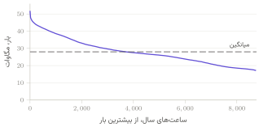
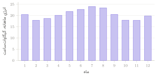
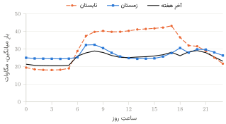
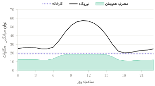
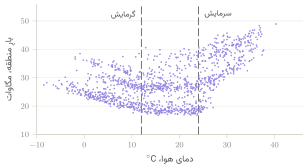
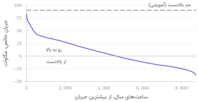
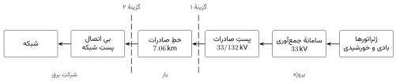
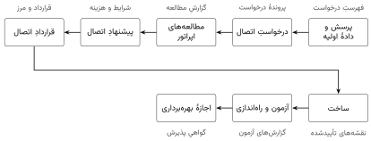

17 بار، شبکه و الزاماتِ پروژه
17.1 نقشهٔ فصل
پس از این فصل، خواننده میتواند:
- نیمرخِ بار را از دادهٔ بازهای تحلیل کند: انرژی، پیک، کمینه، ضریبِ بار، منحنیِ تداوم، فصل و روز، همزمانی، رشد، و بارهای حیاتی، کنترلپذیر و قطعشدنی.
- نقطهٔ اتصال، سطحِ ولتاژ، حدِ صادرات، دادهٔ شبکهٔ در دسترس، تابآوری و هدفهای امنیتِ انرژی را توضیح دهد و جریانِ خالص و وارسیهای کراندارِ اتصال را بسازد.
- مرزِ فیزیکی و قراردادیِ اتصال را تعریف کند: سامانهٔ جمعآوری، پستِ صادرات، مسیرِ خط یا کابل، نقطهٔ اتصال، کارهای شرکتِ برق و دیگران، مالکیت، دسترسی، و مسئولیتِ طراحی، مجوز، هزینه، پذیرش و بهرهبرداری.
- نیازهای ذینفعان را به الزاماتِ سنجشپذیر با معیارِ پذیرش، اولویت، وضعیت، ردیابی و کنترلِ تغییر تبدیل کند و فهرستِ درخواستِ اطلاعاتِ شبکه بنویسد.
پیشنیازها: برقِ متناوب، توانِ ظاهری و ضریبِ بارِ فصلِ ۷ (فصل 7)، ردیابیِ فصلِ ۵ (فصل 5)، مرزهای مدلِ فصلِ ۱۵ (بخش 15.2.3)، و نقشهای فصلِ ۱ (فصل 1).
- انرژیِ 20 MW در ده ساعت چیست؟
- ضریبِ بار را تعریف کنید.
- توانِ ظاهریِ 100 MW با ضریبِ توانِ 0.95 چیست؟
- «نیروگاه باید قابلاعتماد باشد» چه ایرادی دارد؟
- نقطهٔ اتصال کجاست؟
پاسخها: (۱) 200 MWh؛ (۲) میانگین بر پیک؛ (۳) 105.3 MVA؛ (۴) سنجه و عدد ندارد؛ (۵) جایی که انرژی تحویل و اندازهگیری میشود و مسئولیت عوض میشود (فصلِ ۱). اگر دو پرسش یا بیشتر را نتوانستید، فصل 7 و فصل 1 را مرور کنید.
جایگاهِ این فصل در نیروگاهِ P. بخشِ سوم گفت نیروگاه چقدر انرژی میدهد و با چه اطمینانی. بخشِ چهارم میپرسد نیروگاه چگونه ساخته شود تا این انرژی را به شبکه برساند و بفروشد. این فصل نقطهٔ شروع است: چه کسی چه میخواهد (الزامات)، شبکه چه میپذیرد (اتصال) و مرز کجاست (مسئولیت). تحویلدادنی: دفترِ الزامات، فهرستِ درخواستِ اطلاعاتِ شبکه و ماتریسِ مسئولیت، با تصمیمِ D-021. فصلِ ۱۸ معماری را روی همین مبنا میسازد.
بارها و دادهٔ شبکه ساختگی و آموزشیاند (A-284، A-285) و هیچ شبکه یا پستِ واقعی را توصیف نمیکنند. وارسیها غربالاند، نه مطالعهٔ اتصال؛ مطالعه را اپراتورِ شبکه یا مهندسانِ واجدِ شرایط با دادهٔ رسمی انجام میدهند. کدِ شبکه، تقسیمِ هزینهٔ اتصال و تعرفهها کشوریاند (فصلهای ۲۸ و ۵۵ تا ۵۷). این فصل هیچ روشِ کار روی تجهیزاتِ برقدار نمیدهد.
17.2 الف. تقاضا و کاربردها
17.2.1 چرا بارِ دیگران برای نیروگاهِ صادراتی مهم است
ایده. نیروگاهِ P برق را به شبکه میفروشد، نه به یک مصرفکنندهٔ خاص (فصلِ ۱). پس چرا بار؟ سه دلیل:
- بارِ منطقه تعیین میکند انرژیِ نیروگاه کجا میرود: اگر بارِ محلی کم باشد، توان از پستِ شبکه بالا میرود و شبکهٔ پشتِ آن باید ظرفیت داشته باشد؛ اگر زیاد باشد، نیروگاه بارِ محلی را تغذیه میکند و تلفِ شبکه کم میشود.
- بارهای خودِ نیروگاه (حفاظت، کنترل، سرمایش، پمپ و نظافت) منبعِ تغذیه، پشتیبان و قراردادِ واردات میخواهند (بخش 15.4.10).
- در مدلِ خودمصرفیِ صنعتی (فصلِ ۱) بارِ مشتری خودش مبنای طراحی است.
این فصل هر سه را با دادهٔ ساختگی (A-284) میسازد؛ در پروژهٔ واقعی، بارِ منطقه را اپراتورِ شبکه میدهد (بخش 17.3.4).
- سه دلیلِ اهمیتِ بار برای نیروگاهِ صادراتی را بنویسید.
- بارِ منطقه را چه کسی میدهد؟
- چرا بارهای خودِ نیروگاه قراردادِ واردات میخواهند؟
17.2.2 دادهٔ بازهای
ایده. بار با دادهٔ بازهای (به انگلیسی interval data) اندازهگیری میشود: توانِ میانگین در هر بازهٔ ثابت (ربعساعت، ساعت). سه پرسش پیش از هر تحلیل: بازه چند است و توان میانگینِ بازه است یا نمونهٔ لحظهای؟ برچسبِ زمان آغازِ بازه است یا پایانش، و به وقتِ محلی یا جهانی (بخش 15.2.5)؟ کیفیت چیست (شکاف، صفرِ دروغین، دوبار شمردن در تغییرِ ساعتِ تابستانی، فصلِ ۵)؟ انرژیِ یک بازه برابرِ توانِ میانگین ضربِ طولِ بازه است:
\[ E = \sum_k P_k\, \Delta t \tag{17.1}\]
مثال 17.1 (دو ساعت، دو انرژی) پرسش. یک بار هشت ساعت 30 MW و شانزده ساعت 20 MW است. انرژیِ روزانه چیست؟ اگر دادهٔ ربعساعتی باشد و کسی به اشتباه هر مقدار را در یک ساعت ضرب کند، چه میشود؟
پاسخ. E01: \(30 \times 8 + 20 \times 16 = 560\ \text{MWh}\). با خطای بازه، هر ساعت چهار بار شمرده میشود و انرژی چهار برابر، 2,240 MWh.
تفسیر. خطای بازه از رایجترین خطاهای دادهٔ بار است و با یک وارسیِ ساده پیدا میشود: جمعِ سالانه را با صورتحسابِ انرژی یا با «میانگین ضربِ ۸۷۶۰» مقایسه کنید. وارسی: میانگینِ روزانه \(560 / 24 = 23.3\ \text{MW}\)، میانِ 20 و 30 (درست).
- سه پرسشِ پیش از تحلیلِ دادهٔ بازهای را بنویسید.
- انرژیِ 45 MW برای ده ساعت و 25 MW برای چهارده ساعت چیست (P01)؟
- چگونه خطای بازه را پیدا میکنید؟
17.2.3 سنجههای بار
ایده. چند عدد بار را خلاصه میکنند: انرژیِ سالانه، پیک (بیشینه) با زمانش، کمینه، میانگین، و ضریبِ بار (میانگین تقسیم بر پیک، فصلِ ۷):
\[ \text{LF} = \frac{\bar P}{P_\text{peak}} = \frac{E}{P_\text{peak}\, T} \tag{17.2}\]
منحنیِ تداوم (مقدارها از بزرگ به کوچک) نشان میدهد بار چند ساعت بالای هر سطح است. پیک به بازهٔ میانگینگیری بستگی دارد: پیکِ ربعساعتی از پیکِ ساعتی بزرگتر است.
def metrics(p_mw, dt_h: float = 1.0) -> dict:
"""Energy (MWh), peak and minimum (MW), mean, load factor
(mean / peak) and the hour of the peak."""
p = np.asarray(p_mw, float)
e = float(p.sum() * dt_h)
peak = float(p.max())
return {"energy": e, "peak": peak, "min": float(p.min()),
"mean": float(p.mean()), "load_factor": float(p.mean()) / peak,
"peak_at": int(p.argmax())}
def duration_curve(p_mw) -> np.ndarray:
"""Values sorted from the highest to the lowest."""
return np.sort(np.asarray(p_mw, float))[::-1]
def peak_by_resolution(p_fine, steps: int) -> float:
"""Peak of the block means of `steps` intervals (e.g. 15-minute
data averaged to hours with steps = 4)."""
p = np.asarray(p_fine, float)
n = len(p) // steps * steps
return float(p[:n].reshape(-1, steps).mean(axis=1).max())
def diversity(loads) -> tuple[float, float]:
"""Coincidence factor (peak of the sum / sum of the peaks) and its
inverse, the diversity factor."""
loads = [np.asarray(x, float) for x in loads]
cf = float(np.sum(loads, axis=0).max()) / sum(float(x.max()) for x in loads)
return cf, 1.0 / cfregional load, hourly, one year (synthetic, A-284):
energy 245.2 GWh; mean 27.99 MW
peak 51.83 MW on day 190 (month 7) at 17:00; minimum 16.39 MW
load factor 0.540
peak of 15-minute values 53.33 MW; of their hourly means 51.83 MW
the peak depends on the averaging interval: the request names
it, and equipment is rated on the shorter one
مثال 17.2 (پنجاهودو مگاوات در یک عصرِ ژوئیه) پرسش. انرژی، پیک و زمانش، کمینه و ضریبِ بارِ منطقه را بنویسید و پیکِ ربعساعتی را با ساعتی مقایسه کنید.
پاسخ. خروجیِ بالا و شکل 17.1: 245.2 GWh؛ پیک 51.83 MW روزِ ۱۹۰ (ژوئیه) ساعتِ ۱۷؛ کمینه 16.39 MW؛ ضریبِ بار 0.540؛ پیکِ ربعساعتی 53.33 MW، یعنی 2.9 % بیشتر (P04).
تفسیر. ضریبِ بارِ حدودِ نیم یعنی تجهیزاتِ شبکه بیشترِ سال نیمهبار کار میکنند. کمینه از پیک مهمتر است برای نیروگاه: وقتی بارِ محلی 16 MW است و نیروگاه 100 MW میدهد، 84 MW بالا میرود (بخش 17.3.2). در درخواستِ داده، بازه و نوعِ پیک نوشته میشود. وارسی: P02: \(245{,}178 / (51.83 \times 8760) = 0.540\).
- ضریبِ بار را تعریف و برای میانگینِ 28 MW و پیکِ 52 MW حساب کنید (E02).
- منحنیِ تداوم چه چیزی را نشان میدهد که سریِ زمانی نمیدهد؟
- چرا کمینهٔ بار برای نیروگاهِ صادراتی مهم است؟
17.2.4 شکلِ بار: فصل، روز، هفته
ایده. شکلِ بار (چگونه در فصل و روز و هفته تغییر میکند) به اندازهٔ عددها مهم است: وقتی تولیدِ نیروگاه و بارِ محلی همزمان باشند، انرژی محلی مصرف میشود.
monthly energy and peak of the regional load:
month GWh peak MW
1 20.44 38.88
2 17.89 38.77
3 18.69 34.36
4 20.11 41.92
5 21.80 45.14
6 22.73 47.98
7 24.02 51.83
8 23.40 47.86
9 20.50 43.52
10 17.93 34.25
11 17.86 34.18
12 19.79 37.30
summer afternoons carry the peak (cooling); winter mornings add
heating; weekends lose the industry; the shape says when the
plant's export meets local demand and when it flows up

مثال 17.3 (عصرِ تابستان و صبحِ زمستان) پرسش. انرژی و پیکِ ماهانه و نیمرخِ روزانهٔ سه حالت را بخوانید و بگویید بارِ محلی کی با تولیدِ خورشیدی و کی با تولیدِ بادی همزمان است.
پاسخ. خروجیِ بالا، شکل 17.2 و شکل 17.3: بیشترین پیک در ژوئیه (51.83 MW)، کمترین در نوامبر (34.18)؛ تابستان بعدازظهر پیک دارد (سرمایش)، زمستان صبح و عصر، آخرِ هفته بی صنعت.
تفسیر. پیکِ بعدازظهرِ تابستان با تولیدِ خورشیدی همپوشانی دارد؛ پیکِ عصرِ زمستان با بادِ شبانه (فصلِ ۱۵، شکل 15.2). پس هیبرید بارِ محلی را در هر دو فصل بهتر از هر منبعِ تنها پوشش میدهد؛ این را بخش 17.3.2 با عدد نشان میدهد. وارسی: جمعِ دوازده ماه \(245.2\ \text{GWh}\) (درست، گرد شده).
- سه مقیاسِ زمانیِ شکلِ بار را نام ببرید.
- چرا شکل برای نیروگاهِ صادراتی مهم است؟
- کدام بخشِ بار با خورشیدی و کدام با باد همزمان است؟
17.2.5 جزءها، همزمانی و رشد
ایده. بارِ منطقه از چند جزء ساخته شده است (شهر، پمپاژِ کشاورزی، صنعت). پیکِ جزءها همزمان نیست، پس پیکِ مجموع از جمعِ پیکها کمتر است:
\[ \text{CF} = \frac{P_\text{peak}\left(\sum_i P_i\right)}{\sum_i P_{\text{peak},i}}, \qquad \text{DF} = \frac{1}{\text{CF}} \tag{17.3}\]
ضریبِ همزمانی \(\text{CF}\) و وارونِ آن، ضریبِ تنوع \(\text{DF}\). رشدِ بار با نرخِ سالانهٔ ثابت و همان شکل، یک فرضِ ساده است (A-284).
components of the regional load (peaks do not add):
town peak 35.03 MW, energy 167.6 GWh
pump peak 8.71 MW, energy 17.5 GWh
industry peak 13.18 MW, energy 60.1 GWh
sum of the peaks 56.92 MW; peak of the sum 51.83 MW
coincidence factor 0.911; diversity factor 1.098
the components peak at different hours: rating each feeder
for its own peak is right, adding them for the substation is notthe regional load in ten years at three growth rates (same shape):
rate peak MW energy GWh minimum MW
2.0 % 63.18 298.9 19.97
3.5 % 73.11 345.8 23.11
5.0 % 84.43 399.4 26.69
with one of the two 63 MVA transformers out, the peak (at unity
power factor) passes 63 MW from about 2 % a year: growth helps
the plant (more local use, less upward flow) but brings the
substation's reinforcement closer;
'same shape' is an assumption: cooling and electric cars
change the shape (A-284)مثال 17.4 (از دو درصد به بالا، ترانسفورماتورِ دوم) پرسش. ضریبِ همزمانیِ سه جزء و پیکِ ده سالِ بعد را با رشدِ 2، 3.5 و 5 % بنویسید؛ کی پیک از یک ترانسفورماتورِ 63 MVA میگذرد؟
پاسخ. خروجیهای بالا: جمعِ پیکها 56.92، پیکِ مجموع 51.83 MW، \(\text{CF} = 0.911\)؛ ده سال بعد 63.18، 73.11 و 84.43 MW؛ با رشدِ 2 % حدودِ سالِ دهم (P07: 9.9 سال).
تفسیر. پست دو ترانسفورماتور دارد تا اگر یکی از کار افتاد، دیگری بار را ببرد (معیارِ «یکی کمتر»، به انگلیسی N-1). با رشد، این شرط زودتر از ظرفیتِ کل میشکند. رشدِ بار برای نیروگاه خوب است (مصرفِ محلیِ بیشتر)، اما زمانبندیِ تقویتِ شبکه هم پرسشی برای اپراتور است (بخش 17.3.4). وارسی: E03: \(52 / 57 = 0.912\).
- ضریبِ همزمانی و ضریبِ تنوع را تعریف کنید.
- چرا هر فیدر برای پیکِ خودش طراحی میشود اما پست برای پیکِ مجموع؟
- معیارِ «یکی کمتر» چیست؟
17.2.6 بارهای نیروگاه: حیاتی، کنترلپذیر، قطعشدنی
ایده. بارهای خودِ نیروگاه سه ردهاند: حیاتی (باید با قطعِ شبکه هم کار کنند: حفاظت، کنترل، مخابرات، سرمایشِ باتری)، کنترلپذیر (میتوان زمانشان را جابهجا کرد: شارژِ رباتهای نظافت، پمپِ آب، سرمایشِ ساختمان) و قطعشدنی (میتوان قطعشان کرد: کارگاه، خوابگاه). فهرستِ آموزشی (A-284):
| بار | رده | توان، کیلووات | ساعت در روز |
|---|---|---|---|
| حفاظت، کنترل، مخابرات (منبعِ بیوقفه) | حیاتی | ۴۵ | ۲۴ |
| سرورها و شبکهٔ کنترل و پایش | حیاتی | ۲۰ | ۲۴ |
| سرمایشِ کانتینرِ باتری (S1) | حیاتی | ۱۲۰ | ۲۴ |
| روشنایی و امنیتِ پست | حیاتی | ۱۵ | ۱۲ |
| تجهیزاتِ کمکیِ توربینها (میانگین) | کنترلپذیر | ۲۳۰ | ۲۴ |
| شارژِ رباتهای نظافت | کنترلپذیر | ۶۰ | ۸ |
| پمپ و تصفیهٔ آب | کنترلپذیر | ۴۰ | ۱۰ |
| سرمایش و گرمایشِ ساختمانها | کنترلپذیر | ۵۰ | ۱۴ |
| کارگاه و انبار | قطعشدنی | ۳۵ | ۹ |
| خوابگاهِ کارکنان | قطعشدنی | ۲۵ | ۱۶ |
Plant P's own loads by class (A-284):
class peak kW energy MWh share
critical 200 1686 37.2 %
controllable 320 2592 57.1 %
interruptible 60 261 5.7 %
all 565 4539
critical: must run when the grid is lost (protection, control,
battery cooling); controllable: may be shifted to hours of
surplus; interruptible: may be dropped; the list sets the size
of the auxiliary supply and back-up (chapters 18 and 25)مثال 17.5 (دویست کیلووات که هرگز نباید بیفتد) پرسش. پیک و انرژیِ هر رده را بنویسید و بگویید کدام عدد منبعِ تغذیهٔ کمکی و کدام پشتیبان را اندازه میکند.
پاسخ. خروجیِ بالا: حیاتی 200 kW و 1,686 MWh؛ کنترلپذیر 320 kW و 2,592 MWh؛ قطعشدنی 60 kW و 261 MWh؛ پیکِ همه 565 kW.
تفسیر. منبعِ کمکی (ترانسفورماتورِ تجهیزاتِ کمکی) برای پیکِ همه اندازه میشود (مثال 17.32)؛ پشتیبان (باتری یا مولد) فقط برای حیاتیها. ردهبندی یک الزام است با مالک: اگر سرمایشِ باتری حیاتی نباشد، باتری در قطعیِ طولانی خودش را خاموش میکند. وارسی: پیکِ همه \(200 + 320 + 60 = 580\ \text{kW}\) در جمعِ پیکها، اما 565 kW در پیکِ مجموع (همزمانیِ کمتر از یک).
- سه ردهٔ بار را با دو مثال برای هر کدام بنویسید.
- منبعِ کمکی و پشتیبان هر کدام برای کدام عدد اندازه میشوند؟
- چرا ردهبندی یک الزام است؟
17.2.7 تابآوری و جزیره
ایده. تابآوری (به انگلیسی resilience) یعنی توانِ ادامهٔ کارهای حیاتی پس از یک رخداد (قطعیِ شبکه، طوفان). جزیره (به انگلیسی islanding) یعنی بخشی از سامانه جدا از شبکه کار کند؛ برای نیروگاهِ متصل به شبکه این معمولاً ممنوع است مگر با طراحی و اجازهٔ اپراتور (فصلهای ۲۵ و ۲۸). پرسشِ سادهتر: باتریِ S1 چند ساعت بارِ حیاتیِ نیروگاه را نگه میدارد؟
\[ t = \frac{(\text{SOC}_0 - \text{SOC}_\text{min})\, E_\text{B}\, \eta}{P_\text{crit}} \tag{17.4}\]
how long the S1 battery (20 MW, 40 MWh) can carry the plant's
critical load of 200 kW after a loss of the grid:
starting at 90 % charge: 149 h ( 6.2 days)
starting at 50 % charge: 74 h ( 3.1 days)
starting at 20 % charge: 19 h ( 0.8 days)
the battery is sized for the market, so its reserve for the
plant is large; but islanding needs a grid-forming inverter,
protection that works without the grid, and the grid
operator's rules (chapters 19, 25 and 28): a resilience
requirement names all of themمثال 17.6 (شش روز، یا کمتر از یک روز) پرسش. ساعتهایی را که باتری بارِ حیاتیِ 200 kW را از سه حالتِ شارژ نگه میدارد حساب کنید.
پاسخ. خروجیِ بالا: از 90 %: 149 ساعت (E05)؛ از 50 %: 74؛ از 20 %: 19 ساعت.
تفسیر. انرژی کافی است؛ کمبود در کنترل است: اینورترِ شبکهساز، حفاظتی که بی شبکه کار کند، و قاعدهٔ اپراتور. الزامِ تابآوری همهٔ اینها را نام میبرد (بخش 17.4.2، REQ-006): «200 kW برای 24 ساعت»، نه «نیروگاه باید تابآور باشد». وارسی: \((0.9 - 0.1) \times 40 \times 0.93 / 0.2 = 148.8\) ساعت.
جزیرهسازی و کار بی شبکه طراحیِ حفاظت، زمینکردن و کنترلِ تخصصی و اجازهٔ اپراتورِ شبکه میخواهد؛ این بخش فقط اندازهٔ انرژی را برآورد میکند.
- تابآوری و جزیره را تعریف کنید.
- چرا انرژیِ باتری کافی است اما تابآوری را تضمین نمیکند؟
- یک الزامِ تابآوریِ سنجشپذیر بنویسید.
17.2.8 بارِ ساختگیِ این فصل چگونه ساخته شد
ایده. دادهٔ ساختگی فقط وقتی برای آموزش خوب است که سازوکارش معلوم باشد: خواننده میتواند ببیند کدام اثر عمداً در آن گذاشته شده است و تحلیل باید آن را پیدا کند. بارِ منطقه سه جزء دارد: شهر (پایه، دو برآمدگیِ صبح و عصر، سرمایش با دمای بالای 24 °C و گرمایش زیرِ 12 °C از دمای سالِ دادهٔ بسته)، پمپاژ (روزها از آوریل تا سپتامبر) و صنعت (روزهای کاری)، بهاضافهٔ تغییرِ تصادفیِ 3 % با حافظه.
@lru_cache(maxsize=1)
def regional(seed: int = 173) -> dict:
"""Components and total of the regional load (MW)."""
hour, dow, month, t = calendar()
rng = np.random.default_rng(seed)
town = (14.0 + 5.0 * _bump(hour, 8, 1.5) + 9.0 * _bump(hour, 20, 2.0)
+ 0.9 * np.clip(t - 24.0, 0, None)
+ 0.5 * np.clip(12.0 - t, 0, None))
season = (month >= 3) & (month <= 8)
pump = np.where(season & (hour >= 6) & (hour < 18), 8.0, 0.0)
work = (dow < 5) & (hour >= 7) & (hour < 19)
industry = np.where(work, 12.0, 4.0)
noise = 1 + 0.03 * s13.ar1(8760, 3.0, rng)
total = (town + pump + industry) * noise
return {"town": town * noise, "pump": pump * noise,
"industry": industry * noise, "total": total}همین برنامه با دادهٔ اندازهگیریشده جانشین میشود: سنجهها، جریانِ خالص و ظرفیتِ پذیرش با همان برنامهها دوباره ساخته میشوند. چون سازوکار معلوم است، میشود دید مدلِ بار (بخش 17.2.12) کجا درست و کجا گمراه میشود (ضریبِ سرمایشِ 0.9).
- سه جزءِ بارِ ساختگی و محرکِ هر کدام را بنویسید.
- چرا دانستنِ سازوکارِ دادهٔ ساختگی برای آموزش مفید است؟
- وقتی دادهٔ واقعی برسد، چه چیزی در برنامه عوض میشود؟
17.2.9 دادهٔ بارِ معیوب و وارسیهایش
ایده. دادهٔ بار از کنتور و سامانهٔ پایش میآید و همان خطاهای دادهٔ هواشناسی را دارد (فصلهای ۱۲ و ۱۳): شکاف، جهش، مقدارِ گیرکرده، خطای بازه و ساعتِ تکراری در تغییرِ ساعت. پنج خطای آموزشی در سریِ ساعتیِ منطقه کاشته شده است (A-284): شش ساعت شکاف، یک جهشِ دهبرابر، سی ساعت مقدارِ ثابت، یک هفته مقدارِ ربعساعتی که ساعتی خوانده شده (چهار برابر)، و یک ساعتِ تکراری. چند وارسیِ ساده:
def load_checks(p) -> dict:
"""Simple checks on an hourly load series."""
p = np.asarray(p, float)
ok = np.isfinite(p)
med = np.nanmedian(p)
runs, k = 0, 1
while k < len(p): # runs of 6 equal values
j = k
while j < len(p) and p[j] == p[j - 1]:
j += 1
runs += int(j - k + 1 >= 6)
k = j + 1
return {"length": len(p), "gaps": int((~ok).sum()),
"spikes": int((p[ok] > 3 * med).sum()),
"stuck_runs": runs,
"energy_vs_median": float(np.nansum(p) / (med * len(p)))}checks on the clean and the faulty regional load:
check clean faulty
length 8760 8761
gaps 0 6
spikes 0 127
stuck_runs 0 1
energy / (median x n) 1.038 1.102
length 8761 shows the repeated hour; the spike check also
flags the week of quarter-hour values (x4); the stuck run is
found; the energy ratio moves: compare with the meter's
billing totals before any number is usedمثال 17.7 (پنج خطا، چهار وارسی) پرسش. وارسیها را روی سریِ سالم و معیوب اجرا کنید و بگویید هر خطا را کدام وارسی پیدا کرد.
پاسخ. خروجیِ بالا: طول 8,761 (ساعتِ تکراری)؛ 6 شکاف؛ 127 جهش (یک جهشِ واقعی و ۱۲۶ ساعت از هفتهٔ چهاربرابر)؛ 1 اجرای گیرکرده؛ نسبتِ انرژی به میانه از 1.038 به 1.102.
تفسیر. هر پنج خطا پیدا شد، اما نه با یک وارسی: خطای بازه با وارسیِ جهش دیده شد، چون مقدارها چهار برابر شده بودند. وارسیِ نهایی همیشه مقایسه با صورتحساب است: جمعِ ماهانهٔ داده باید با انرژیِ صورتحسابِ همان ماه بخواند. پس در درخواستِ داده، صورتحسابها یا جمعهای رسمی هم خواسته میشوند. وارسی: \(1 + 126 = 127\) جهش.
- پنج خطای رایجِ دادهٔ بار را نام ببرید.
- چرا خطای بازه با وارسیِ جهش دیده شد؟
- وارسیِ نهاییِ دادهٔ بار چیست؟
17.2.10 نسخهٔ خودمصرفیِ صنعتی
ایده. در مدلِ خودمصرفیِ صنعتی (فصلِ ۱) یک کارخانه برقِ نیروگاه را مستقیم میخرد. بارِ کارخانهٔ آموزشی (A-284) تقریباً تخت است: 22 MW در کار، 6 MW در تعطیلیِ هفتگی و 3 MW در دو هفته تعمیرِ اساسی. پرسش: نیروگاه ساعت به ساعت چه سهمی از نیازِ کارخانه را میدهد؟
industrial self-supply variant (factory A-284, model 15.1 output):
factory: 167.0 GWh, peak 25.7 MW, load factor 0.742
covered by the plant 127.2 GWh (76.2 % of the factory's energy)
still imported 39.8 GWh; exported surplus 168.1 GWh
hours fully covered 5702 of 8760
a flat industrial load and a variable plant meet only part of
the time: the contract prices the matched energy, the import
and the export separately; storage and a larger plant raise
the cover with falling returns (chapters 19 and 21)
مثال 17.8 (سهچهارمِ نیاز، با نیروگاهی بسیار بزرگتر) پرسش. انرژیِ کارخانه، سهمِ پوششداده با نیروگاه، واردات، صادراتِ مازاد و ساعتهای پوششِ کامل را بنویسید.
پاسخ. خروجیِ بالا و شکل 17.4: کارخانه 167.0 GWh با پیکِ 25.7 MW و ضریبِ بارِ 0.742؛ پوشش 127.2 GWh (76.2 %)؛ واردات 39.8 GWh؛ مازاد 168.1 GWh؛ 5,702 ساعت پوششِ کامل.
تفسیر. نیروگاه نزدیکِ دو برابرِ نیازِ کارخانه انرژی دارد، اما فقط سهچهارمِ نیاز را همزمان میدهد: شبهای کمباد و ساعتهای آرام. قرارداد سه جریان را جدا قیمتگذاری میکند: انرژیِ همزمان، واردات و صادرات. ذخیرهساز یا نیروگاهِ بزرگتر پوشش را بالا میبرد اما با بازدهِ نزولی (فصلهای ۱۹ و ۲۱). وارسی: \(127.2 + 39.8 = 167.0\ \text{GWh}\).
- سه جریانِ انرژی در مدلِ خودمصرفی را نام ببرید.
- چرا نیروگاهِ دو برابر بزرگتر همهٔ نیاز را نمیدهد؟
- دو راهِ بالا بردنِ پوشش را با هزینهشان بنویسید.
17.2.11 مصرفِ خودِ نیروگاه: از تولیدِ خود یا از شبکه
ایده. بارهای خودِ نیروگاه (جدول 17.1) بیشترِ ساعتها از تولیدِ خودِ نیروگاه تأمین میشوند و از کنتور نمیگذرند؛ فقط وقتی تولید کم است برق وارد میشود.
the plant's own loads, from its own output or imported:
own loads 4,539 MWh a year (classes of section A)
covered in the same hour by generation 4,315 MWh
imported 224 MWh in 466 hours
most own use never crosses the meter; the import is small but
priced by its own contract; the auxiliary supply must still
take the full load from the grid when the plant is stillمثال 17.9 (فهرستِ کاملتر، مدلِ تازه) پرسش. انرژیِ بارهای خودِ نیروگاه، بخشِ تأمینشده از تولید و بخشِ واردشده را بنویسید و با مصرفِ داخلیِ مدلِ 15.1 مقایسه کنید.
پاسخ. خروجیِ بالا: 4,539 MWh در سال؛ 4,315 از تولید؛ 224 MWh وارداتی در 466 ساعت. مدلِ 15.1 مصرفِ داخلیِ 2.34 GWh و واردِ 151 MWh داشت (مثال 15.21).
تفسیر. فهرستِ ردهها کاملتر از فرضِ مدل است: سرمایشِ باتریِ S1 و ساختمانها و خوابگاه را دارد. این همان بازخوردی است که مهندسیِ الزامات باید بدهد: الزامِ تازه (فهرستِ بارهای کمکی) فرضِ مدل را جایگزین میکند و مدل نسخهٔ تازه میگیرد (بخش 17.4.7)؛ اختلاف حدودِ 2.2 GWh در سال یا 0.7 % انرژی است. منبعِ کمکی هنوز باید همهٔ بار را از شبکه بتواند بگیرد، چون نیروگاه گاهی خاموش است. وارسی: \(4{,}315 + 224 = 4{,}539\).
- چرا بیشترِ مصرفِ داخلی از کنتور نمیگذرد؟
- چرا فهرستِ ردهها و فرضِ مدل فرق دارند و کدام برنده است؟
- چرا منبعِ کمکی باید همهٔ بار را از شبکه بگیرد؟
17.2.12 مدلِ بار: دما و تقویم
ایده. برای سنجیدنِ «اگر»ها (سالِ گرمتر، رشد) یک مدلِ بار لازم است: بار بهصورتِ تابعی از چیزهایی که از پیش معلوم یا پیشبینیشدنیاند. یک مدلِ خطیِ ساده: درجهٔ سرمایش (\(\max(T - 24, 0)\))، درجهٔ گرمایش (\(\max(12 - T, 0)\))، ساعتِ کاری و هماهنگهای ساعتِ روز. آزمونِ منصفانه همان فصلِ ۱۵ است: آموزش روی ژانویه تا اوت، آزمون روی سپتامبر تا دسامبر.
def features(hour, dow, t):
"""Cooling and heating degrees, hour of day (sine/cosine pairs) and a
working-day flag: all known in advance or forecast."""
cool = np.clip(t - 24.0, 0, None)
heat = np.clip(12.0 - t, 0, None)
work = ((dow < 5) & (hour >= 7) & (hour < 19)).astype(float)
cols = [np.ones_like(t), cool, heat, work]
for k in (1, 2, 3):
w = 2 * np.pi * k * hour / 24
cols += [np.sin(w), np.cos(w)]
return np.column_stack(cols)a load model on temperature and calendar (trained Jan-Aug, tested
Sep-Dec, synthetic load A-284):
coefficients: base 22.55 MW, cooling 1.35 MW per degree, heating 0.36,
working hours 7.96 MW
test RMSE 2.75 MW (10.6 % of the mean); test bias +0.68 MW
a year 1.5 C hotter: peak 52.93 -> 54.96 MW, energy 247.2 -> 250.9 GWh
cooling comes out at 1.35 MW per degree although the data were
built with 0.9: the summer pumping rises with the heat and the
model gives it to cooling (confounding); a meter per component
or a pumping flag separates them
the model explains the shape, not the future: growth, new
loads and a changed climate are scenarios on top of it, and a
real model is fitted on several years of measured data
مثال 17.10 (یکوسهدهم بهجای نهدهم) پرسش. ضریبهای مدل، خطای آزمون و پیک و انرژیِ سالی 1.5 °C گرمتر را بنویسید. چرا ضریبِ سرمایش از 0.9یی که داده با آن ساخته شده بیشتر است؟
پاسخ. خروجیِ بالا و شکل 17.5: پایه 22.55 MW، سرمایش 1.35 MW بر درجه، گرمایش 0.36، ساعتِ کاری 7.96 MW؛ خطای آزمون 2.75 MW (10.6 %) با سوگیریِ +0.68؛ سالِ گرمتر: پیک از 52.93 به 54.96 MW.
تفسیر. پمپاژِ کشاورزی در ماههای گرم است و مدل آن را به سرمایش نسبت میدهد؛ این درهمآمیختگی (به انگلیسی confounding) است: اگر پمپها را از داده کنار بگذاریم، ضریب 0.89 میشود. پس سالِ گرمترِ مدل کمی بیش از واقع بار میافزاید. راه: کنتورِ جدا برای جزءها، یا یک نشانهٔ «فصلِ پمپاژ» در مدل. درسِ کلی: ضریبِ مدل علت نیست، مگر جزءها جدا سنجیده شوند. وارسی: \(1.35 \times 1.5 = 2.0\ \text{MW}\)، نزدیکِ افزایشِ پیکِ 2.03 MW.
- چهار ویژگیِ مدلِ بار را بنویسید و بگویید چرا همه از پیش معلوماند.
- درهمآمیختگی چیست و در این مدل چگونه پیدا شد؟
- چرا مدلِ بار برای «رشد» کافی نیست؟
17.3 ب. شبکه و زمینهٔ اتصال
17.3.1 نقطهٔ اتصال و سطحِ ولتاژ
ایده. نقطهٔ اتصال (فصلِ ۱) جایی است که مسئولیتِ نیروگاه و شبکه به هم میرسد و انرژی تحویل و اندازهگیری میشود. انتخابِ آن چند پرسش را با هم پاسخ میدهد: کدام سطحِ ولتاژ (اینجا 132 kV برای 100 MW؛ ولتاژِ کمتر جریان و تلفِ بیشتر دارد، ولتاژِ بیشتر تجهیزاتِ گرانتر)، کدام پست (نزدیکترین پست با ظرفیت، فصلِ ۱۴)، کدام مسیر (خطِ 7.06 km، مثال 14.32)، و چه کسی خط را میسازد و نگه میدارد (بخش 17.6). شبکهٔ آموزشیِ این فصل (A-285):
NETWORK = { # teaching values (A-285)
"line_km": 7.06, # chapter 14 least-cost route
"r_ohm_km": 0.12, "x_ohm_km": 0.40,
"line_rating_mva": 140.0,
"v_kv": 132.0,
"s_sc_mva": 1500.0, # short-circuit power at the POC
"upstream_mw": 90.0, # export the 132 kV network beyond
# the grid substation can take
"trafo_mva": 2 * 63.0, # grid substation 132/33 kV
}همهٔ این عددها آموزشیاند؛ عددِ واقعی را فقط اپراتورِ شبکه میدهد و در فهرستِ درخواستِ داده میآیند (بخش 17.3.4).
- چهار پرسشی را که انتخابِ نقطهٔ اتصال پاسخ میدهد بنویسید.
- چرا 100 MW به 132 kV وصل میشود نه 33 kV؟
- کدام عددهای شبکه را فقط اپراتور میتواند بدهد؟
17.3.2 جریانِ خالص در گرهٔ شبکه
ایده. در باسِ 132 kVِ پستِ شبکه، توانِ نیروگاه با بارِ منطقه جمع میشود. جریانِ خالص (به انگلیسی net flow) به شبکهٔ بالادست:
\[ P_\text{up}(t) = P_\text{plant}(t) - P_\text{load}(t) \tag{17.5}\]
مثبت یعنی توان بالا میرود، منفی یعنی منطقه از شبکهٔ بالادست میگیرد. اگر شبکهٔ بالادست فقط تا حدی (90 MW، آموزشی) جا داشته باشد، ساعتهای بالای آن حد بُرش میخواهند. این یک وارسیِ کراندار است، نه مطالعهٔ شبکه.
flow at the grid substation's 132 kV bus (Plant P export minus
the regional load; positive = flowing up into the network):
hours flowing up 4652; energy up 116.2 GWh
local use of the plant's energy 179.1 GWh of 295.3 GWh
largest upward flow 82.8 MW; upstream limit 90 MW (teaching)
hours above the limit 0; energy above it 0.00 GWh
if the network beyond could take less (teaching limits):
50 MW: 368 h above, 4.50 GWh to curtail
60 MW: 210 h above, 1.63 GWh to curtail
70 MW: 67 h above, 0.28 GWh to curtail
80 MW: 7 h above, 0.01 GWh to curtail
a bounded check, not a study: if the network beyond cannot take
the flow, the operator limits the plant (chapter 15 curtailment)
مثال 17.11 (شصت درصد محلی، چهل درصد رو به بالا) پرسش. ساعتها و انرژیِ رو به بالا، سهمِ مصرفِ محلی و ساعتهای بالای حدهای مختلفِ شبکهٔ بالادست را بنویسید.
پاسخ. خروجیِ بالا و شکل 17.6: 4,652 ساعت رو به بالا، 116.2 GWh؛ مصرفِ محلی 179.1 از 295.3 GWh (60.7 %، P17)؛ بیشترین 82.8 MW، زیرِ حدِ 90 MW؛ با حدِ 70 MW 67 ساعت و 0.28 GWh، با 50 MW 368 ساعت و 4.50 GWh بُرش.
تفسیر. با حدِ آموزشی بُرشی نیست، اما حساسیت نشان میدهد این عدد مهمترین پرسشِ شبکه است: اگر بالادست 50 MW جا داشته باشد، 1.5 % انرژی گم میشود. پس حدِ بالادست، نیروگاههای دیگرِ در صف و تقویتهای برنامهریزیشده سه سطرِ مهمِ درخواستِ دادهاند (مثال 17.25). وارسی: \(295.3 - 179.1 = 116.2\ \text{GWh}\) (درست).
- جریانِ خالص را تعریف کنید و علامتش را توضیح دهید.
- چرا کمینهٔ بارِ منطقه بیشترین جریانِ رو به بالا را میسازد؟
- سه دادهٔ شبکه را که این حساب به آنها حساس است بنویسید.
17.3.3 وارسیهای کراندار: حرارتی، ولتاژ، قدرتِ اتصالِ کوتاه
ایده. پیش از درخواستِ اتصال، چند وارسیِ کراندار نشان میدهد آیا پیشنهاد معقول است:
- حرارتی: توانِ ظاهریِ بیشینه زیرِ ردهٔ خط و ترانسفورماتور.
- افزایشِ ولتاژ: در خطِ کوتاه \(\Delta V / V \approx (R\,P + X\,Q) / V^2\) (فصلِ ۷).
- نسبتِ اتصالِ کوتاه: قدرتِ اتصالِ کوتاهِ شبکه در نقطهٔ اتصال تقسیم بر توانِ نیروگاه؛ گرهِ «قوی» برای اینورترها آسانتر است (فصلِ ۷).
def net_flow(load_mw, gen_mw):
"""Flow from the node to the higher grid (positive = export up)."""
return np.asarray(gen_mw, float) - np.asarray(load_mw, float)
def voltage_rise(p_mw, q_mvar, r_ohm: float, x_ohm: float, v_kv: float):
"""Approximate voltage rise at the sending end of a line in per cent:
dV/V = (R P + X Q) / V^2 (Q > 0 exported, inductive line)."""
return 100.0 * (r_ohm * np.asarray(p_mw) + x_ohm * np.asarray(q_mvar)) / v_kv ** 2
def thermal_ok(s_mva, rating_mva: float) -> bool:
return bool(np.max(np.abs(np.asarray(s_mva, float))) <= rating_mva)
def short_circuit_ratio(s_sc_mva: float, p_mw: float) -> float:
"""Short-circuit power at the POC over the plant's rated power."""
return s_sc_mva / p_mwexport line 7.06 km at 132 kV: R 0.847, X 2.824 ohm (teaching)
voltage rise at the plant end, dV/V = (R P + X Q) / V^2:
P MW Q Mvar rise %
100 0.0 0.49
100 32.9 1.02
100 -32.9 -0.05
50 0.0 0.24
this short 132 kV line moves the voltage by about half a per
cent at unity power factor and one per cent with reactive
export; reactive power moves it more than active (X > R);
the grid code's voltage window and the operator's studies
decide the reactive mode (chapters 25 and 28)thermal and system-strength screening (teaching values):
export at the limit, pf 0.95: 105.3 MVA; line rating 140 MVA: ok
short-circuit power at the POC 1500 MVA; ratio to 100 MW: 15.0
with the 110 MW installed: 13.6
a high ratio means a 'strong' node where inverters behave
well; a low one needs studies of control stability; the
operator gives the short-circuit power for normal and
outage cases (data request)مثال 17.12 (نیم درصد، صد و پنج مگاولتآمپر، پانزده) پرسش. افزایشِ ولتاژ را برای چهار حالت، حاشیهٔ حرارتیِ خط و نسبتِ اتصالِ کوتاه را بنویسید.
پاسخ. خروجیهای بالا: 0.49 % با 100 MW (E06)، 1.02 % با صدورِ 32.9 Mvar (P09)، −0.05 % با جذبِ همان، 0.24 % با 50 MW؛ 105.3 MVA در برابرِ ردهٔ 140 MVA؛ نسبتِ 15.0 (13.6 با 110 MW).
تفسیر. هر سه وارسی با عددهای آموزشی میگذرند. اما «گذشتن» یعنی ارزشِ پرسیدن دارد، نه «تأیید شد»: اپراتور با مدلِ کاملِ شبکه، حالتهای قطعی، نیروگاههای دیگر و معیارهای کدِ شبکه مطالعه میکند (فصلِ ۲۸). توانِ واکنشی ولتاژ را بیش از توانِ حقیقی جابهجا میکند (\(X > R\))، پس حالتِ توانِ واکنشی بخشی از الزامِ ولتاژ است (REQ-003، REQ-004). وارسی: \(0.847 \times 100 / 132^2 = 0.486\ \%\).
وارسیهای این بخش غربالاند. مطالعهٔ اتصال (پخشِ بار، اتصالِ کوتاه، پایداری، کیفیتِ توان) را اپراتورِ شبکه یا مهندسانِ واجدِ شرایط با دادهٔ رسمی انجام میدهند (فصلهای ۲۷ و ۲۸).
- سه وارسیِ کراندار و دادهٔ هر کدام را بنویسید.
- چرا «گذشتن از غربال» تأیید نیست؟
- چرا توانِ واکنشی ولتاژ را بیشتر جابهجا میکند؟
17.3.4 درخواستِ داده از اپراتورِ شبکه
ایده. بیشترِ عددهای این بخش آموزشی بودند. درخواستِ داده آنها را به عددِ واقعی تبدیل میکند. هر سطرِ درخواست میگوید چه، چرا (کدام الزام یا مجهول) و از چه کسی؛ پاسخها با تاریخ ثبت میشوند. فهرستِ کامل در آزمایشگاه (مثال 17.25) ساخته میشود. چند قاعده:
- دقیق بخواهید: «بارِ پست، ربعساعتی، سه سالِ اخیر، با برچسبِ زمانِ پایانِ بازه» بهتر از «اطلاعاتِ بار».
- حالتها را بخواهید: حالتِ عادی و حالتهای قطعی، بیشینه و کمینهٔ اتصالِ کوتاه.
- آینده را بخواهید: نیروگاههای در صف، بارهای برنامهریزیشده، تقویتها و تاریخشان.
- محرمانگی را بپذیرید: برخی دادهٔ شبکه محرمانه است؛ قراردادِ عدمِ افشا و مدلِ معادل، جانشینِ رایج است.
- سه بخشِ هر سطرِ درخواست را بنویسید.
- چرا حالتهای قطعی هم خواسته میشوند؟
- وقتی داده محرمانه است، چه جانشینی هست؟
17.3.5 نقشها و قیدهای سامانه
ایده. در اتصال چند نقش هست که گاهی یک سازماناند و گاهی نه (فصلِ ۱): مالکِ شبکه (داراییها)، اپراتورِ شبکه (بهرهبرداری، دیسپچ، مطالعه)، خریدار (قراردادِ خرید)، تنظیمگر (قواعد و تعرفهها). قیدهای سامانه که از آنها میآیند: ظرفیتِ شبکه (بخش 17.3.2)، ذخیره و تعادل (پیشبینی، فصلِ ۱۵)، ولتاژ و توانِ واکنشی، پایداری و حفاظت. نقشها در ماتریسِ مسئولیت (بخش 17.6.2) و قیدها در دفترِ الزامات (بخش 17.4) ثبت میشوند.
- چهار نقش در اتصال را با کارِ هر کدام بنویسید.
- پنج قیدِ سامانه را نام ببرید.
- اگر مالک و اپراتورِ شبکه یکی باشند، چه پرسشی دربارهٔ تعارضِ منافع پیش میآید (فصلِ ۱)؟
17.3.6 بار در مگاولتآمپر: ترانسفورماتورهای پستِ شبکه
ایده. در مثال 17.4 پیک با مگاوات و ضریبِ توانِ یک با 63 MVA مقایسه شد. اما تجهیزات جریان را میبرند و جریان با توانِ ظاهری میرود. بارِ منطقه با ضریبِ توانِ 0.92 پسفاز (A-284):
\[ S = \frac{P}{\text{pf}}, \qquad Q = \sqrt{S^2 - P^2} \tag{17.6}\]
the regional load in MVA (power factor 0.92, A-284):
peak 51.83 MW = 56.34 MVA; reactive 22.08 Mvar
two transformers (126 MVA): loading 44.7 %
one out (63 MVA): loading 89.4 %
growth that reaches 63 MVA with one out: about 1.12 % a year over ten years
checking in MW at unity power factor (section A) was too kind:
equipment carries current, which follows MVAمثال 17.13 (نود درصد با یک ترانسفورماتور) پرسش. پیک را به مگاولتآمپر ببرید، بارگذاریِ دو و یک ترانسفورماتور را حساب کنید و رشدی را که شرطِ «یکی کمتر» را در ده سال میشکند بنویسید.
پاسخ. خروجیِ بالا: 56.34 MVA و 22.08 Mvar؛ با دو ترانسفورماتور 44.7 %، با یکی 89.4 %؛ رشدِ حدودِ 1.12 % در سال کافی است.
تفسیر. با مگاولتآمپر، حاشیهٔ پست با یک ترانسفورماتور حدودِ سهپنجمِ برآوردِ مگاواتی است (6.7 MVA در برابرِ 11.2 MW). درس: وارسیهای کراندار در یکای درست انجام میشوند؛ و ضریبِ توانِ بار از اپراتور خواسته میشود (مثال 17.25، سطرِ ۱). اگر نیروگاه توانِ واکنشی بدهد، بخشی از این بار را میگیرد؛ این یک خدمت است با قیمت و قاعدهٔ خودش (فصلِ ۲۸). وارسی: \(51.83 / 0.92 = 56.34\).
- چرا تجهیزات با مگاولتآمپر سنجیده میشوند؟
- توانِ واکنشیِ 56.34 MVA با 51.83 MW چیست؟
- نیروگاه چگونه میتواند بارِ ترانسفورماتورهای پست را کم کند؟
17.3.7 ظرفیتِ پذیرشِ گره
ایده. ظرفیتِ پذیرش (به انگلیسی hosting capacity) بزرگترین نیروگاهی است که گره بی شکستنِ قیدها میپذیرد. سه قیدِ آموزشی (A-285): حدِ شبکهٔ بالادست (90 MW)، افزایشِ ولتاژِ کمتر از 1.1 % روی خطِ 7.06 km و ردهٔ خط (140 MVA). نیروگاه با همان شکلِ ساعتیِ نیروگاهِ P بزرگ و کوچک میشود.
hosting capacity of the grid node for a plant shaped like Plant P
(export limit in MW, teaching constraints A-285):
upstream up to 105 MW
voltage up to 225 MW
thermal up to 140 MW
the binding constraint: upstream; Plant P's 100 MW is
within all three; hosting depends on the local load's minimum,
which is why the measured load is the first item of the requestمثال 17.14 (صد و پنج مگاوات، به سببِ بالادست) پرسش. ظرفیتِ پذیرش را با هر قید بنویسید و قیدِ تعیینکننده را نام ببرید.
پاسخ. خروجیِ بالا: بالادست تا 105 MW، ولتاژ تا 225، حرارتی تا 140 MW؛ تعیینکننده: بالادست.
تفسیر. گره برای خودِ نیروگاهِ P جا دارد اما نه بیشتر: هر نیروگاهِ دیگری در صفِ همین پست (مثال 17.25، سطرِ ۷) ظرفیت را میانِ دو پروژه تقسیم میکند. قیدِ بالادست به کمینهٔ بارِ محلی بسته است: با رشدِ بار ظرفیتِ پذیرش بالا میرود (مثال 17.4). این غربال است؛ ظرفیتِ رسمی را اپراتور با مطالعه میدهد. وارسی: ولتاژ: \(0.847 \times 225 / 132^2 = 1.09\ \%\)، زیرِ 1.1 % (درست).
- ظرفیتِ پذیرش را تعریف کنید.
- چرا قیدِ بالادست به کمینهٔ بار بسته است؟
- نیروگاهِ دیگری در صف چه اثری دارد؟
17.3.8 امنیتِ انرژیِ محلی
ایده. هدفهای امنیتِ انرژی (فصلِ ۱) برای منطقه با چند سنجه بیان میشوند: سهمِ انرژیِ منطقه که نیروگاه همزمان میدهد، ساعتهایی که نیروگاه بهتنهایی کلِ منطقه را میپوشاند، و طولانیترین دورهٔ بیپوشش.
local energy-security indicators for the regional load:
share of the regional energy met by Plant P in the same hour 73.0 %
hours in which the plant alone covers the region 4652 of 8760
longest run of hours not covered 63 h
these say how much the region could lean on the plant; they do
not make the plant a backup: without the grid it cannot run
(grid-following units, section A of chapter 18)مثال 17.15 (هفتاد و سه درصد، اما نه پشتیبان) پرسش. سه سنجهٔ امنیتِ انرژی را بنویسید و بگویید چرا نیروگاه پشتیبانِ منطقه نیست.
پاسخ. خروجیِ بالا: 73.0 % انرژیِ منطقه همزمان؛ 4,652 ساعت پوششِ کامل؛ طولانیترین دورهٔ بیپوشش 63 ساعت.
تفسیر. منطقه میتواند به انرژیِ نیروگاه تکیه کند، اما نه به وجودِ آن در قطعیِ شبکه: واحدهای پیروِ شبکه بی شبکه کار نمیکنند (فصلِ ۱۸)، و جزیرهسازیِ منطقه طراحی و اجازهٔ اپراتور میخواهد (بخش 17.2.7). سنجهها برای گفتوگو با مقامهای محلی مفیدند، به شرطِ گفتنِ همین حد. وارسی: \(179.1 / 245.2 = 0.730\).
- سه سنجهٔ امنیتِ انرژیِ محلی را تعریف کنید.
- چرا پوششِ زیاد نیروگاه را پشتیبان نمیکند؟
- برای اینکه نیروگاه پشتیبانِ بخشی از منطقه شود، چه لازم است؟
17.3.9 حدِ صادراتِ ثابت یا پویا
ایده. اگر شبکهٔ بالادست جای کمی داشته باشد، اپراتور میتواند حدِ صادرات را ثابت بگذارد (برای بدترین ساعت: کمترین بارِ محلی) یا پویا (هر ساعت: حدِ بالادست بهاضافهٔ بارِ همان ساعت). حدِ آموزشیِ بالادست اینجا 50 MW است (A-285).
static against dynamic export limit (upstream 50 MW, teaching):
static limit (50 MW + lowest load 16.4 MW) = 66.4 MW: 12.32 GWh curtailed
dynamic limit (50 MW + the hour's load): 4.50 GWh curtailed
following the load needs measured flows, a fast plant controller
and the operator's agreement (chapters 20 and 28); the static
limit is simpler and costs the difference every yearمثال 17.16 (دوازده یا چهار و نیم گیگاواتساعت) پرسش. بُرشِ سالانه را با حدِ ثابت و پویا مقایسه کنید و بگویید حدِ پویا چه میخواهد.
پاسخ. خروجیِ بالا: ثابت 66.4 MW و 12.32 GWh بُرش؛ پویا 4.50 GWh، همان عددِ مثال 17.11 برای حدِ 50 MW.
تفسیر. حدِ پویا 7.8 GWh در سال نجات میدهد، یعنی 2.6 % انرژی؛ بهایش اندازهگیریِ جریان در پستِ شبکه، کنترلگرِ سریعِ نیروگاه (فصلِ ۲۰) و موافقتِ اپراتور است. این یک الزامِ رابط است: داده از سمتِ شبکه، فرمان در سمتِ نیروگاه (بخش 17.6.5). وارسی: \(12.32 - 4.50 = 7.82\ \text{GWh}\).
- حدِ ثابت و پویا را تعریف کنید.
- چرا حدِ ثابت باید کمترین بارِ محلی را فرض کند؟
- سه چیزی را که حدِ پویا لازم دارد بنویسید.
17.3.10 محرمانگی و ردهٔ داده در تبادل با اپراتور
ایده. دادهٔ شبکه (مدلِ شبکه، قدرتِ اتصالِ کوتاه، تنظیمهای حفاظت، نیروگاههای در صف) اغلب محرمانه است و دادهٔ نیروگاه (منحنیِ قابلیت، مدلِ کنترلگر) برای سازنده مالکیتِ فکری دارد. تبادلِ امن یک الزامِ رابط است، نه یک جزئیاتِ اداری: (۱) ردهٔ هر داده (عمومی، داخلی، محرمانه)؛ (۲) قراردادِ عدمِ افشا پیش از تبادل؛ (۳) مدلِ معادل بهجای مدلِ کاملِ شبکه وقتی ممکن است؛ (۴) کانالِ امن و فهرستِ دسترسی؛ (۵) نگهداری و حذف پس از پایانِ کار. اینها اصولِ دفاعیِ مدیریتِ دادهاند (فصلِ ۳۶)؛ این کتاب جزئیاتِ فنیِ حمله یا دفاعِ تاکتیکی نمیدهد.
- سه دادهٔ شبکه و دو دادهٔ نیروگاه را که محرمانهاند نام ببرید.
- پنج جزءِ تبادلِ امن را بنویسید.
- چرا مدلِ معادل جانشینِ رایجِ مدلِ کاملِ شبکه است؟
17.4 پ. مهندسیِ الزامات
17.4.1 از ذینفع تا نیاز
ایده. الزام از نیازِ یک ذینفع شروع میشود (فصلِ ۱): مالک بازده میخواهد، وامدهنده اطمینان، اپراتورِ شبکه رفتارِ پیشبینیپذیر، خریدار تحویل، مرجعِ مجوز رعایتِ محیطِزیست، بهرهبردار نگهداریِ آسان، و همسایهها آرامش. مصاحبهٔ ذینفع این نیازها را بیرون میکشد؛ چند قاعده:
- پرسشِ باز، سپس بسته: «سالِ بدِ این نیروگاه برای شما چیست؟» پیش از «حدِ صدا چند است؟».
- دلیل را بپرسید: پشتِ «باتری میخواهیم» شاید «جریمهٔ انحراف» باشد (فصلِ ۱۵) و راهِ ارزانتری هم باشد.
- سند را بخواهید: قرارداد، کدِ شبکه، مجوز؛ نیازِ بیسند «فرض» است.
- ثبت کنید: چه کسی، کی، چه گفت؛ همان روز در دفتر.
مثال 17.17 (سه جمله از سه ذینفع) پرسش. این سه جمله را به نیاز و ذینفع تبدیل کنید: (۱) «نمیخواهیم شبکه هر بعدازظهرِ بهار نیروگاه را محدود کند» (مالک)؛ (۲) «ولتاژ در پستِ ما نباید از حد بیرون برود» (اپراتور)؛ (۳) «نیروگاه باید آسان نگه داشته شود» (بهرهبردار).
پاسخ. (۱) نیاز: ظرفیتِ صادراتِ کافی و دانستنِ حدِ بالادست؛ به درخواستِ داده و REQ-001 میرود. (۲) نیاز: کنترلِ ولتاژ و توانِ واکنشی؛ REQ-003 و REQ-004. (۳) نیازِ مبهم؛ REQ-010 که هنوز سنجه ندارد.
تفسیر. جملهٔ ذینفع الزام نیست؛ مادهٔ خامِ الزام است. سومی نشان میدهد چرا گامِ بعد (بخش 17.4.2) لازم است. وارسی: هر نیاز به یک ذینفع و یک سند یا مجهول وصل شد.
- هفت ذینفعِ نیروگاه و نیازِ اصلیِ هر کدام را بنویسید.
- چرا دلیلِ پشتِ خواسته را میپرسیم؟
- نیازِ بیسند چه وضعیتی دارد؟
17.4.2 الزامِ سنجشپذیر
ایده. الزامِ خوب یک چیز میخواهد، سنجشپذیر است (کمیت، عدد، یکا، شرایط)، شدنی است، بیابهام است و منبع دارد. عددِ آن یا در خودِ الزام است یا در سندی که نامش آمده است (کدِ شبکه، قرارداد، مجوز). سه نمونه:
| ضعیف | خوب |
|---|---|
| نیروگاه باید قابلاعتماد باشد. | دسترسپذیریِ انرژیمحورِ بادی دستکم 97 % در هر سالِ قرارداد، با تعریفِ قرارداد. |
| ولتاژ باید خوب باشد. | ولتاژِ نقطهٔ اتصال در پنجرهٔ اپراتور؛ افزایشِ ولتاژ با 100 MW کمتر از 1.1 %. |
| نیروگاه باید پیشبینی بدهد. | پیشبینیِ ساعتیِ روزِ بعد تا ساعتِ ۱۲، با مهارتِ مثبت نسبت به ماندگاری. |
مثال 17.18 («آسان نگه داشته شود» به عدد) پرسش. REQ-010 («نیروگاه آسان نگه داشته شود») را به یک یا دو الزامِ سنجشپذیر تبدیل کنید.
پاسخ. معیار: «میانگینِ زمانِ تعمیرِ اینورتر کمتر از 24 ساعت با قطعهٔ یدکیِ انبارشده»؛ «هر قطعهٔ بیش از 500 kg با جرثقیلِ ساختگاه یا دسترسیِ جادهایِ ثبتشده قابلِ تعویض» (عددها آموزشی؛ فصلهای ۵۱ و ۲۹).
تفسیر. حالا هر دو را میشود آزمود و به قرارداد برد. عدد باید از کسی بیاید که هزینهاش را میپردازد (مالک) و کسی که اجرایش میکند (پیمانکارِ نگهداری) بپذیرد؛ این همان گامِ اولویتبندی است (بخش 17.4.3). وارسی: هر دو جمله یک کمیت، یک عدد و یک شرط دارند.
- پنج ویژگیِ الزامِ خوب را بنویسید.
- «ولتاژ باید خوب باشد» را سنجشپذیر کنید.
- عددِ یک الزام کجا میتواند باشد اگر در خودِ جمله نیست؟
17.4.3 اولویت و تعارض
ایده. همهٔ الزامات هموزن نیستند. یک روشِ ساده: باید (بی آن پروژه شکست میخورد یا قانون شکسته میشود)، بهتر است (ارزشِ زیاد، اما جانشین دارد)، میتواند (اگر ارزان بود). الزامات گاهی تعارض دارند: بلوکِ خورشیدیِ بزرگتر انرژی میافزاید و بُرش هم (مثال 15.22)؛ چیدمانِ یالی انرژی میافزاید و خطرِ پرنده هم (مثال 16.44). تعارض با ماتریسِ تصمیم (فصلِ ۵) یا با ارزشِ پولی (فصلِ ۱۶) حل میشود، و تصمیم ثبت میشود.
مثال 17.19 (نه «باید»، دو «بهتر است»، یک «میتواند») پرسش. شمارِ اولویتهای دفترِ آزمایشگاه را بنویسید و یک تعارض در آن پیدا کنید.
پاسخ. خروجیِ مثال 17.26: باید ۹، بهتر است ۲، میتواند ۱. تعارض: REQ-011 (آبِ شستوشو در حدِ مجوز) و REQ-002 (بیانیهٔ P50 با گرد و غبارِ سیاستِ آستانه)؛ اگر مجوزِ آب کمتر از سیاستِ شستوشو باشد، انرژی کم میشود (بخش 15.7).
تفسیر. تعارض پنهان خطرناک است: هر دو الزام جدا درست به نظر میرسند. پیوندِ الزامات به تصمیمها و فرضها (بخش 17.4.6) تعارض را آشکار میکند. وارسی: \(9 + 2 + 1 = 12\) الزام (درست).
- سه سطحِ اولویت را تعریف کنید.
- دو تعارض از فصلهای پیشین بنویسید.
- تعارض با چه ابزارهایی حل میشود؟
17.4.4 وضعیت: تأییدشده، فرضی، باز
ایده. هر الزام یک وضعیت دارد: تأییدشده (سندِ رسمی یا اندازهگیری پشتش است)، فرضی (بهترین برآورد با منبع، تا وقتی تأیید شود)، باز (نمیدانیم؛ مالک و تاریخِ بستن دارد). این همان زبانِ دفترِ فرضها و مجهولهاست (فصلِ ۲). خطرِ رایج: فرضی که کسی یادش رفته فرض است.
مثال 17.20 (هفت باز از دوازده) پرسش. وضعیتِ الزاماتِ آزمایشگاه را بشمارید و بگویید پیش از ثابت کردنِ مبنا چه باید شود.
پاسخ. خروجیِ مثال 17.26: تأییدشده ۱، فرضی ۴، باز ۷.
تفسیر. با هفت بازِ «باید»، مبنا را نمیشود ثابت کرد؛ میشود ثابت کرد «با این بازها، با این مالکان، تا این تاریخها». بیشترِ بازها با پاسخِ اپراتور بسته میشوند (مثال 17.25): درخواستِ داده و دفترِ الزامات دو روی یک سکهاند. وارسی: \(1 + 4 + 7 = 12\).
- سه وضعیت را تعریف کنید.
- خطرِ «فرضِ فراموششده» چیست؟
- مبنای دارای الزاماتِ باز چگونه ثابت میشود؟
17.4.5 معیارِ پذیرش و روشِ راستیآزمایی
ایده. هر الزام باید بگوید چگونه ثابت میشود برآورده شده است: بازرسی (دیدن، اندازه گرفتنِ ساده)، تحلیل (محاسبه و مدل)، نمایش (کار کردن در شرایطِ معمول)، آزمون (اندازهگیری در شرایطِ کنترلشده). معیارِ پذیرش عدد و شرطِ گذر است. اینها در مرحلهٔ راهاندازی (فصلهای ۴۹ و ۵۰) اجرا میشوند؛ اما حالا نوشته میشوند تا طراحی آنها را بداند.
| الزام | روش | معیارِ پذیرش (نمونه) |
|---|---|---|
| REQ-001 صادرات | آزمون و داده | میانگینِ ربعساعتیِ کنتور زیرِ 100 MW در آزمونِ حد |
| REQ-003 توانِ واکنشی | آزمون | ضریبِ توانِ 0.95 پیشفاز و پسفاز در توانِ کامل، طبقِ کدِ شبکه |
| REQ-006 بارِ حیاتی | نمایش | 200 kW برای 24 ساعت در قطعیِ شبیهسازیشده |
| REQ-009 پیشبینی | تحلیل | مهارتِ مثبت نسبت به ماندگاری روی سه ماه داده |
- چهار روشِ راستیآزمایی را با یک مثال برای هر کدام بنویسید.
- چرا معیارِ پذیرش حالا نوشته میشود؟
- برای REQ-012 (صدا) روش و معیار بنویسید.
17.4.6 ردیابی
ایده. ردیابی (فصلِ ۵) یعنی هر الزام به منبعش (ذینفع، سند)، به تصمیمها و فرضهایی که بر آن تکیه دارند، به طراحی که برآوردش میکند و به آزمونی که ثابتش میکند وصل باشد. ماتریسِ ردیابی پرسشهایی مانندِ «اگر D-019 عوض شود، کدام الزامات و آزمونها اثر میگیرند؟» را پاسخ میدهد.
مثال 17.21 (چهار الزامِ بیپیوند) پرسش. الزاماتی را که به هیچ تصمیم، فرض یا مجهولی وصل نیستند پیدا کنید و برای هر کدام پیوندِ درست را پیشنهاد کنید.
پاسخ. خروجیِ مثال 17.26: REQ-005، REQ-007، REQ-008، REQ-010. پیشنهاد: REQ-005 به مجهولِ تازهٔ «منحنیِ عبور از خطا در کدِ شبکه»؛ REQ-007 به قراردادِ دیسپچ؛ REQ-008 به قراردادِ خرید و بخش 17.6.3؛ REQ-010 پس از سنجهدار شدن به قراردادِ نگهداری.
تفسیر. الزامِ بیپیوند یتیم است: کسی نمیداند چرا آمده و اگر حذف شود چه میشود. پیش از ثابت کردنِ مبنا، هیچ الزامی یتیم نمیماند. وارسی: چهار یتیم از دوازده.
- ردیابی چه چیزهایی را به هم وصل میکند؟
- «الزامِ یتیم» چیست و چرا خطرناک است؟
- اگر D-019 عوض شود، کدام الزامِ آزمایشگاه اثر میگیرد؟
17.4.7 کنترلِ تغییر
ایده. پس از ثابت شدنِ مبنا، هر تغییر از یک مسیرِ ثبتشده میگذرد: درخواست (چه، چرا، چه کسی)، سنجشِ اثر (هزینه، زمان، انرژی، ریسک، الزاماتِ دیگر از راهِ ردیابی)، تصمیم (چه کسی میتواند بپذیرد)، اجرا و ثبت (نسخهٔ تازهٔ سندها). این همان نسخهگذاریِ مدلِ فصلِ ۱۵ است، برای الزامات.
مثال 17.22 (حدِ صادرات از صد به نود) پرسش. اپراتور پس از ثابت شدنِ مبنا میگوید حدِ صادرات 90 MW است. مسیرِ تغییر را با اثرهایش بنویسید.
پاسخ. معیار: درخواست: REQ-001 از 100 به 90 MW، منبع: نامهٔ اپراتور. اثر: بُرشِ 1,757 MWh در سال (بخش 15.4.7، P45ِ فصلِ ۱۵)، درآمد، شاید اندازهٔ باتری؛ الزاماتِ وابسته: REQ-002 (بیانیهٔ تازه، مدلِ نسخهٔ تازه). تصمیم: مالک، با وامدهنده. ثبت: نسخهٔ تازهٔ دفترِ الزامات و مدل.
تفسیر. بی کنترلِ تغییر، یک نامه میتواند بیانیهٔ تولید را بیصدا نادرست کند. با آن، اثر پیش از پذیرش دیده و قیمتگذاری میشود. وارسی: ردیابی از REQ-001 به D-019 و REQ-002 اثر را پیدا کرد.
- چهار گامِ کنترلِ تغییر را بنویسید.
- چرا سنجشِ اثر به ردیابی نیاز دارد؟
- چه کسی تغییرِ REQ-001 را میپذیرد؟
17.4.8 ماتریسِ راستیآزمایی بر حسبِ مرحله
ایده. هر الزام در یک مرحله نخستین بار اثبات میشود: طراحی (تحلیل)، خرید (آزمونِ نوعی)، ساخت (بازرسی)، راهاندازی (آزمون و نمایش) یا بهرهبرداری (داده). ماتریسِ راستیآزمایی این را برای همهٔ الزامات مینویسد تا طراحی راهِ شاهد را باز بگذارد: نقطهٔ آزمون، ثبتِ داده، دسترسی.
verification matrix: the phase where each requirement is first
proven and how:
REQ-001 must design test at commissioning
REQ-002 must design analysis, then first-year comparison
REQ-003 must procurement type test, then site test
REQ-004 must design study, then site measurement
REQ-005 must procurement type test and plant study
REQ-006 should commissioning demonstration
REQ-007 must commissioning test
REQ-008 must construction inspection and test
REQ-009 should operation analysis of three months
REQ-010 could operation analysis of repair records
REQ-011 must operation inspection of meter readings
REQ-012 must commissioning test at the receptor
by phase: design 3, procurement 2, commissioning 3, construction 1,
operation 3
half are proven only at commissioning or later: the design
must keep the evidence route open (test points, data, access)مثال 17.23 (نیمی پس از ساخت) پرسش. الزامات را بر حسبِ مرحلهٔ نخستین اثبات بشمارید و بگویید طراحی برای الزاماتِ دیرهنگام چه باید فراهم کند.
پاسخ. خروجیِ بالا: طراحی ۳، خرید ۲، ساخت ۱، راهاندازی ۳، بهرهبرداری ۳؛ شش الزام فقط در راهاندازی یا پس از آن اثبات میشوند.
تفسیر. برای REQ-012 (صدا در گیرنده) جای اندازهگیری و دسترسی به اردوگاه باید از حالا در قرارداد باشد؛ برای REQ-009 (پیشبینی) ثبتِ دادهٔ تولید با برچسبِ زمانِ درست (فصلِ ۱۵)؛ برای REQ-006 یک کلیدِ آزمون برای شبیهسازیِ قطعی. الزامی که راهِ شاهد ندارد، در پایانِ پروژه «قابلاثبات نیست» و به مذاکره میرود. وارسی: \(3 + 2 + 1 + 3 + 3 = 12\).
- پنج مرحلهٔ اثبات را با روشِ رایجِ هر کدام بنویسید.
- «راهِ شاهد» یعنی چه؟
- برای REQ-007 طراحی چه باید فراهم کند؟
17.4.9 گونههای الزام و رکوردِ آن
ایده. الزامات چند گونهاند و هر گونه روشِ راستیآزماییِ رایجِ خودش را دارد:
| گونه | چه میگوید | نمونه از دفتر | راستیآزماییِ رایج |
|---|---|---|---|
| کارکردی | چه کاری انجام شود | REQ-007 پیروی از فرمانِ کاهش | آزمون |
| کارایی | چقدر خوب | REQ-002 انرژیِ P50 | تحلیل، سپس داده |
| رابط | با چه چیزی، در چه مرزی | REQ-008 اندازهگیریِ دوسویه | بازرسی و آزمون |
| قید | چه چیزی مجاز نیست | REQ-011 آب در حدِ مجوز | بازرسیِ دورهای |
| کیفیت و نگهداری | چقدر آسان و پایدار | REQ-010 پس از سنجهدار شدن | تحلیلِ سوابق |
هر رکورد در کتابخانهٔ همراه همین ستونها را دارد؛ وارسیِ «سنجه عدد دارد؟» یک ابزارِ خام است که فقط پرسش میسازد (مثال 17.26):
@dataclass
class Requirement:
rid: str
text: str
measure: str # how it is verified
source: str # stakeholder or document
status: str = "assumed" # verified | assumed | open
priority: str = "must" # must | should | could
links: list = field(default_factory=list)
def is_measurable(self) -> bool:
"""A requirement is measurable when its measure names a quantity
with a number (a crude check used in the lab)."""
return any(ch.isdigit() for ch in self.measure)- پنج گونهٔ الزام را با یک مثال برای هر کدام بنویسید.
- چرا الزامِ «قید» با بازرسیِ دورهای راستیآزمایی میشود؟
- یک ستونِ دیگر که به رکورد میافزایید و دلیلش را بنویسید.
17.4.10 الزامِ ضدجزیره
ایده. نیروگاهِ پیروِ شبکه نباید پس از قطعِ شبکه ناخواسته بخشی از آن را برقدار نگه دارد: کارکنانِ شبکه که خط را بیبرق فرض میکنند در خطر میافتند و وصلِ دوبارهٔ ناهمزمان تجهیزات را آسیب میزند. پس کدِ شبکه معمولاً تشخیصِ جزیره و جدا شدن را میخواهد (فصلهای ۹ و ۲۷). این با الزامِ تابآوری (بخش 17.2.7) تعارض ظاهری دارد: تابآوری یعنی کارِ برنامهریزیشدهٔ بارهای حیاتیِ خودِ نیروگاه پس از جدا شدن، نه برقدار نگه داشتنِ شبکه. هر دو در دفتر میآیند، با مرزِ روشن: «پس از قطعِ شبکه، نیروگاه در زمانِ تعیینشده در کدِ شبکه از نقطهٔ اتصال جدا میشود؛ بارهای حیاتی پشتِ کلیدِ جداکننده از باتری تغذیه میشوند.» عددِ زمان از کدِ شبکه میآید و این کتاب آن را نمیگوید.
- چرا جزیرهٔ ناخواسته خطرناک است؟
- تعارضِ ظاهریِ ضدجزیره و تابآوری چگونه حل میشود؟
- عددِ زمانِ جدا شدن از کجا میآید؟
17.5 ت. آزمایشگاهِ الزامات
این آزمایشگاه مثالِ کارشدهٔ فصل را اجرا میکند (پیک و انرژیِ سالانه از دادهٔ ساعتی، سپس فهرستِ درخواستِ اطلاعاتِ شبکه) و دفترِ الزامات را با وضعیتها میسازد.
برنامه:
python -m companion.ch17.lab_d17.5.1 مثالِ کارشده: از دادهٔ ساعتی تا فهرستِ درخواست
worked example: the regional load from hourly data
1 data check: 8760 values, gaps 0, negative 0: usable
2 annual energy: sum of hourly MW x 1 h = 245,178 MWh (245.2 GWh)
3 peak: 51.83 MW, day 190, 17:00 (month 7, weekday)
4 load factor: 27.99 / 51.83 = 0.540
5 resolution: 15-minute peak 53.33 MW (+2.9 %)
6 minimum 16.39 MW: the plant's 100 MW export flows up
whenever it exceeds the local load
7 what the analysis cannot tell, and must be asked (request list):
the measured load, its resolution and quality; transformer and
line ratings; the outage cases the operator plans for; the
short-circuit power; other generators and planned loadsمثال 17.24 (هفت گام) پرسش. از دادهٔ ساعتیِ بارِ منطقه، پیکِ تقاضا و انرژیِ سالانه را بسازید، وارسی کنید و بگویید چه چیزی را نمیتوان از داده فهمید و باید از اپراتور پرسید.
پاسخ. خروجیِ بالا، گام به گام:
- وارسیِ داده: ۸۷۶۰ مقدار، بی شکاف و بی منفی؛ قابلِ استفاده.
- انرژی: جمعِ توانِ ساعتی ضربِ یک ساعت: 245,178 MWh (245.2 GWh).
- پیک: 51.83 MW، روزِ ۱۹۰، ساعتِ ۱۷، روزِ کاری در ژوئیه.
- ضریبِ بار: \(27.99 / 51.83 = 0.540\).
- بازه: پیکِ ربعساعتی 53.33 MW، 2.9 % بیشتر.
- کمینه: 16.39 MW؛ صادراتِ نیروگاه در بیشترِ ساعتهای پرتولید بالا میرود.
- آنچه داده نمیگوید: بارِ اندازهگیریشده و کیفیتش، ردهها، حالتهای قطعی، قدرتِ اتصالِ کوتاه، نیروگاهها و بارهای آینده؛ اینها فهرستِ درخواست را میسازند (مثال 17.25).
تفسیر. گامِ ۷ مهمترین گام است: تحلیلِ دادهٔ ساختگی مهارتِ پرسیدن را میسازد، نه پاسخ را. هر عددِ گامهای ۲ تا ۶ وقتی دادهٔ واقعی برسد دوباره ساخته میشود؛ برنامه همان است. وارسی: \(27.99 \times 8760 = 245{,}192\ \text{MWh}\)، نزدیکِ جمعِ 245,178 (گرد کردنِ میانگین).
- هفت گامِ مثالِ کارشده را بنویسید.
- چرا وارسیِ داده گامِ اول است؟
- سه چیزی را که از دادهٔ بار نمیتوان فهمید بنویسید.
17.5.2 فهرستِ درخواستِ اطلاعاتِ شبکه
grid information request list (PLP-ELE-LST-0003, draft):
no item why
1 load at the grid substation, 15-min, 3 years peaks, minimum, growth
2 transformer and line ratings, normal and N-1 thermal checks
3 short-circuit power, max and min, at the POC equipment duty, SCR
4 network model or equivalent at the POC voltage and stability
5 voltage window and reactive requirement REQ-003, REQ-004
6 fault ride-through and protection settings REQ-005, chapter 27
7 other generators and queued projects nearby hosting, curtailment
8 planned reinforcements and their dates export limits over time
9 outage statistics of the line and substation ch 15 outage hours
10 metering, telemetry and dispatch interfaces REQ-007, REQ-008
11 connection costs and who pays which works boundary, chapter 21
12 connection application steps and deadlines schedule, chapter 38
12 items, all to the grid operator (3 also via the code
or the buyer); each answer closes an open requirement or unknownمثال 17.25 (دوازده سطر به اپراتور) پرسش. فهرستِ درخواستِ اطلاعاتِ شبکه را با دلیلِ هر سطر بنویسید و بگویید کدام سطرها کدام الزام یا مجهول را میبندند.
پاسخ. خروجیِ بالا (PLP-ELE-LST-0003): دوازده سطر؛ سطرهای ۵ و ۶ الزامات REQ-003 تا REQ-005 را، سطرِ ۱۰ REQ-007 و REQ-008 را، سطرِ ۹ ساعتهای قطعیِ فصلِ ۱۵ (U-057) را، و سطرهای ۷ و ۸ حدِ بالادست و بُرشِ آینده را پاسخ میدهند.
تفسیر. هر سطر یک دلیل دارد؛ سطرِ بیدلیل درخواست را شلوغ میکند و پاسخ را دیر. ترتیبِ سطرها بر اساسِ اثر است: بار و ردهٔ تجهیزات و حدِ بالادست اول، چون بیانیهٔ تولید و اندازهٔ اتصال به آنها بسته است. پاسخها با تاریخ ثبت و هر الزامِ وابسته بهروز میشود. وارسی: سه سطر هم از کد یا خریدار میآیند، نه فقط از اپراتور (خروجی).
- چرا هر سطرِ درخواست دلیل دارد؟
- ترتیبِ سطرها بر چه اساسی است؟
- پاسخِ کدام سطر بیانیهٔ تولید را عوض میکند؟
17.5.3 دفترِ الزامات
ایده. دفترِ الزامات (PLP-PRJ-REG-0007) همهٔ الزامات را با شناسه، متن، سنجه، منبع، وضعیت، اولویت و پیوندها نگه میدارد. برنامه دو وارسیِ ساده دارد: سنجه عدد دارد؟ و پیوند هست؟
def register() -> list:
R = dm.Requirement
return [
R("REQ-001", "export at the POC up to the agreed capacity",
"metered export <= 100 MW (15-min mean)", "connection offer",
"assumed", "must", ["D-002"]),
R("REQ-002", "deliver the P50 yield statement",
"net energy 295 GWh/yr P50 at the POC (model 15.1)", "owner",
"verified", "must", ["D-019", "D-020"]),
R("REQ-003", "reactive power capability at the POC",
"pf 0.95 lead/lag at full export, test per grid code", "grid code",
"open", "must", ["U-059"]),
R("REQ-004", "voltage at the POC within the operator's window",
"window from the operator; rise < 1.1 % at 100 MW", "grid operator",
"open", "must", ["U-057"]),
R("REQ-005", "ride through grid faults",
"profile from the grid code; type test + plant study", "grid code",
"open", "must", []),
R("REQ-006", "keep critical loads on loss of grid",
"200 kW for 24 h from battery or back-up", "owner",
"assumed", "should", ["A-284"]),
R("REQ-007", "limit export when the operator orders",
"set-point followed within 60 s, logged", "grid operator",
"assumed", "must", []),
R("REQ-008", "meter export and import separately",
"revenue meters, class per contract, both directions", "PPA",
"assumed", "must", []),
R("REQ-009", "provide a day-ahead forecast",
"hourly forecast by 12:00 day before; skill vs persistence", "PPA",
"open", "should", ["U-056"]),
R("REQ-010", "plant is easy to keep running",
"", "operator (O&M)", "open", "could", []),
R("REQ-011", "water use for cleaning within the permit",
"<= permitted m3/yr, metered monthly", "permit",
"open", "must", ["U-053"]),
R("REQ-012", "noise at the nearest camp",
"<= limit from the permit at the receptor, survey", "permit",
"open", "must", ["U-051"]),
]requirements register (PLP-PRJ-REG-0007, draft): 12 entries
status: verified 1, assumed 4, open 7
priority: must 9, should 2, could 1
without a measurable criterion: REQ-005, REQ-008, REQ-010, REQ-012
without a link to a decision, assumption or unknown: REQ-005, REQ-007,
REQ-008, REQ-010
the crude check (a number in the measure) flags four: three
are measurable by reference (the number lives in the grid
code, the contract or the permit, which must be named);
REQ-010 is a wish, not a requirement, until it names a
measure (availability, mean time to repair); unlinked entries
need a source document before the baseline is frozenمثال 17.26 (دوازده الزام، چهار یتیم، یک آرزو) پرسش. شمارِ وضعیتها و اولویتها، الزاماتِ بی سنجهٔ عددی و الزاماتِ بیپیوند را بنویسید و داوری کنید.
پاسخ. خروجیِ بالا: تأییدشده ۱، فرضی ۴، باز ۷؛ باید ۹، بهتر است ۲، میتواند ۱؛ بی سنجهٔ عددی: REQ-005، REQ-008، REQ-010، REQ-012؛ بیپیوند: REQ-005، REQ-007، REQ-008، REQ-010.
تفسیر. وارسیِ خودکار خام است: سه الزام با ارجاع سنجشپذیرند (عدد در کدِ شبکه، قرارداد یا مجوز) و فقط باید نامِ سند را بیاورند؛ REQ-010 واقعاً سنجه ندارد (مثال 17.18). برنامه کارِ آدم را کوتاه میکند، جای داوری را نمیگیرد. وارسی: سه الزام (REQ-005، REQ-008، REQ-010) در هر دو فهرستاند.
- هفت ستونِ دفترِ الزامات را نام ببرید.
- چرا وارسیِ «عدد در سنجه» خام است؟
- REQ-012 را با نامِ سند سنجشپذیر کنید.
17.5.4 همان مثال برای مشتریِ صنعتی
ایده. در نسخهٔ خودمصرفی (بخش 17.2.10) همان هفت گام برای کارخانه تکرار میشود، اما فهرستِ درخواست به مشتری میرود، نه به اپراتور، و موضوعهایش فرق دارد.
مثال 17.27 (بیستوشش مگاوات، صد و شصت و هفت گیگاواتساعت) پرسش. پیک و انرژیِ سالانهٔ کارخانه را از دادهٔ ساعتی بنویسید و فهرستِ درخواستِ اطلاعات از کارخانه را با دلیلِ هر سطر بسازید.
پاسخ. از مثال 17.8: انرژی 167.0 GWh، پیک 25.7 MW، ضریبِ بار 0.742. فهرستِ درخواست (معیار):
- دادهٔ کنتور سه سال، ربعساعتی، با صورتحسابها: پیک و انرژیِ واقعی و وارسیِ کیفیت.
- قراردادِ فعلیِ خرید و تعرفه، توانِ قراردادی و جریمهٔ بیشمصرف: ارزشِ هر مگاواتساعتِ همزمان.
- برنامهٔ تولیدِ کارخانه: تعطیلیها، شیفتها، تعمیرِ اساسی؛ شکلِ بارِ آینده.
- بارهای حیاتی و حساس کارخانه و نیازِ کیفیتِ توان (افتِ ولتاژِ مجاز، هارمونیک): الزاماتِ رابط.
- طرحهای توسعه و بارهای تازه: رشد.
- نقطهٔ تحویل در کارخانه و مالکِ پستِ آن: مرز و کنتور (بخش 17.6).
تفسیر. ضریبِ بارِ بالای کارخانه (0.742) یعنی بار تخت است و پوششِ همزمان را منبع تعیین میکند، نه بار (مثال 17.8)؛ پس پرسشِ مهم «تعرفهٔ ساعتهای بیپوشش» است، نه «پیکِ کارخانه». وارسی: \(167{,}010 / (25.69 \times 8760) = 0.742\).
- فهرستِ درخواستِ مشتری با فهرستِ اپراتور چه فرقی دارد؟
- چرا تعرفهٔ ساعتهای بیپوشش مهمتر از پیکِ کارخانه است؟
- دو الزامِ رابطِ کیفیتِ توان برای کارخانه بنویسید.
17.6 ث. مرزِ اتصال و مسئولیت
17.6.1 مرزِ فیزیکی و قراردادی
ایده. میانِ ژنراتورها و شبکه زنجیرهای از داراییهاست: سامانهٔ جمعآوری (33 kV، فصلِ ۲۴)، پستِ صادرات (33/132 kV)، خط یا کابلِ صادرات، بیِ اتصال در پستِ شبکه، و خودِ شبکه. مرزِ فیزیکی جایی است که داراییها به هم پیچ شدهاند؛ مرزِ قراردادی جایی است که مالکیت، اندازهگیری و مسئولیت عوض میشود. این دو لزوماً یکی نیستند: ممکن است خطِ صادرات را پروژه بسازد و به شرکتِ برق واگذار کند. فصلِ ۱ این مرز را برای نیروگاهِ P باز گذاشت (مالکِ خط)؛ این بخش ابزارِ بستنش را میدهد.

- پنج دارایی میانِ ژنراتورها و شبکه را به ترتیب نام ببرید.
- مرزِ فیزیکی و قراردادی چه فرقی دارند؟
- چرا ممکن است پروژه خطی بسازد که مالکش نیست؟
17.6.2 ماتریسِ مسئولیت
ایده. برای هر دارایی، شش پرسش: چه کسی طراحی میکند، مجوز میگیرد، میپردازد، مالک است، بهرهبرداری و نگهداری میکند و میپذیرد (آزمون و تحویل). پاسخ: پروژه (P)، شرکتِ برق یا اپراتور (U)، مشترک (S)، یا باز (?). ماتریسِ آموزشیِ نیروگاهِ P (A-285):
# P project, U utility / grid operator, S shared, ? open (A-285)
MATRIX = {
"PV array, inverters": "P P P P P P",
"wind turbines": "P P P P P P",
"33 kV collector cables": "P P P P P P",
"site substation 33/132 kV": "P P P P P S",
"132 kV export line 7.06 km": "P P ? ? ? S",
"line corridor and easement": "P P P ? ? U",
"bay at the grid substation": "S U ? U U U",
"revenue metering": "S U P ? U U",
"protection interface": "S S P S S U",
"telemetry and dispatch": "S U P S S U",
"grid substation, network": "U U U U U U",
}responsibility matrix: 11 assets x 6 activities = 66 cells
project 31, utility 17, shared 11, open 7
open cells:
132 kV export line 7.06 km pay
132 kV export line 7.06 km own
132 kV export line 7.06 km operate
line corridor and easement own
line corridor and easement operate
bay at the grid substation pay
revenue metering own
the export line and its corridor hold five of the seven open
cells: who owns, pays and runs them decides where the POC
really is; shared cells need an interface document with
named ownersمثال 17.28 (هفت خانهٔ باز، پنج تا روی خط) پرسش. شمارِ خانهها بر حسبِ طرف و خانههای باز را بنویسید و بگویید کدام دارایی مرز را تعیین میکند.
پاسخ. خروجیِ بالا: ۶۶ خانه؛ پروژه ۳۱، شرکتِ برق ۱۷، مشترک ۱۱، باز ۷ (10.6 %، P18)؛ پنج خانهٔ باز روی خطِ صادرات و دالانش.
تفسیر. تا وقتی مالک، پرداختکننده و بهرهبردارِ خط معلوم نیست، نقطهٔ اتصال معلوم نیست: یا پستِ نیروگاه است یا بیِ پستِ شبکه (مثال 17.33). خانههای مشترک (حفاظت، مخابرات، اندازهگیری) سندِ رابط میخواهند که نامِ مسئولِ هر کار را بیاورد (فصلِ ۱۸). ماتریس با ردیابیِ الزامات پیوند دارد: هر خانهٔ باز یک مجهول است (U-065). وارسی: \(31 + 17 + 11 + 7 = 66\).
- شش فعالیتِ ماتریس را نام ببرید.
- چرا خانهٔ «باز» یک مجهول است؟
- خانههای مشترک چه سندی میخواهند؟
17.6.3 جای کنتور و تلفِ خط
ایده. کنتورِ درآمدی تعیین میکند چه چیزی فروخته شده است. اگر کنتور در پستِ نیروگاه باشد و خطِ 7.06 km میانِ آن و شبکه، تلفِ خط را یا خریدار میپردازد یا قرارداد اصلاحش میکند؛ اگر کنتور در بیِ شبکه باشد، پروژه. مرزِ مدلِ فصلِ ۱۵ (جدول 15.2) در سمتِ 132 kVِ پستِ نیروگاه است و تلفِ این خط در آن نیست.
where the meter sits decides who carries the line losses:
line R 0.847 ohm; loss at 100 MW 0.486 MW
yearly loss 754 MWh = 0.26 % of 295.3 GWh
meter at the site substation: the buyer receives less than is
metered (or the contract corrects for it); meter at the grid
bay: the project carries the loss; either way, the contract
and the model (chapter 15 boundary) must use the same pointمثال 17.29 (هفتصد و پنجاه مگاواتساعت از یک تصمیم) پرسش. تلفِ خطِ صادرات را در 100 MW و در سال حساب کنید و بگویید اگر کنتور در بیِ شبکه باشد، بیانیهٔ تولید چه تغییری میکند.
پاسخ. خروجیِ بالا: 0.486 MW در 100 MW (E08)؛ 754 MWh در سال، یعنی 0.26 % (P13). با کنتور در بیِ شبکه، بیانیه 754 MWh کمتر میشود و مدل نسخهٔ تازه میگیرد.
تفسیر. عدد کوچک است، اما هر سال و در قرارداد است. اگر مدل و قرارداد دو نقطه را به کار ببرند، اختلافِ دائمی میانِ «تولیدِ مدل» و «فروشِ واقعی» پیدا میشود که کسی علتش را نمیداند (بخش 15.5.4). پس جای کنتور یک الزام است (REQ-008) و یک مجهول تا قرارداد بسته شود. وارسی: \(0.847 \times (100/132)^2 = 0.486\ \text{MW}\).
- جای کنتور چه چیزی را تعیین میکند؟
- چرا مدل و قرارداد باید یک نقطه را به کار ببرند؟
- تلفِ خط را با مقاومتِ دو برابر حساب کنید.
17.6.4 هزینهٔ اتصال: سه الگو
ایده. چه کسی هزینهٔ داراییهای اتصال را میپردازد؟ الگوها در کشورها فرق دارند و این کتاب هیچ الگویی را به کشوری نسبت نمیدهد (فصلهای ۵۵ تا ۵۷). سه الگوی ساختاری: پروژه داراییهای سمتِ خودش را میپردازد؛ بهاضافهٔ بیِ اتصال (الگوی کمعمق)؛ بهاضافهٔ سهمی از تقویتِ شبکهٔ بالادست (الگوی عمیق). عددهای آموزشی (A-285):
three patterns of connection cost (teaching values, million u):
line 3.18, bay 1.80, site substation 9.50, upstream 14.00 (share 0.625)
assets to the plant side of the bay 12.68 ( 115 k u per MW)
plus the bay (shallow) 14.48 ( 132 k u per MW)
plus a share of the reinforcement (deep) 23.23 ( 211 k u per MW)
the pattern is set by national rules and the connection offer,
not by the engineer; the requirement register records which
pattern applies and the boundary follows from itمثال 17.30 (از صد و پانزده تا دویست و یازده هزار واحد بر مگاوات) پرسش. هزینهٔ اتصالِ پروژه را در سه الگو و به ازای هر مگاوات بنویسید.
پاسخ. خروجیِ بالا: 12.68، 14.48 و 23.23 میلیون واحد؛ 115، 132 و 211 k u بر مگاوات (P14)؛ سهمِ تقویت 8.75 میلیون (P15).
تفسیر. الگوی عمیق هزینه را تقریباً دو برابر میکند و با تقویتِ پستِ شبکه (مثال 17.4) هم گره دارد: اگر تقویت برای رشدِ بار لازم است، تقسیمِ هزینهاش پرسشِ مذاکره است. این عددها به مدلِ مالی (فصلهای ۲۰ و ۲۱) میروند؛ الگو را پیشنهادِ اتصال و قواعدِ ملی تعیین میکنند و دفترِ الزامات ثبتش میکند. وارسی: \(3.18 + 1.80 + 9.50 = 14.48\).
- سه الگوی هزینهٔ اتصال را تعریف کنید.
- چرا این کتاب الگو را به کشوری نسبت نمیدهد؟
- سهمِ پروژه از تقویتِ 14 میلیونی با ظرفیتِ 100 از 160 MW چیست؟
17.6.5 آزمونها و رابطهای بهرهبرداری
ایده. مرز فقط مالکیت نیست؛ کارِ روزانه است. در مرز اینها تعریف میشوند: آزمونهای پذیرش در نقطهٔ اتصال (توانِ واکنشی، پاسخ به فرمان، کیفیتِ توان؛ فصلهای ۴۹ و ۵۰)، دسترسی (چه کسی کلیدِ پستِ شبکه را دارد)، هماهنگیِ حفاظت (تنظیمها در دو سوی مرز، فصلِ ۲۷)، مخابرات و دیسپچ (فرمان، پایش، فصلِ ۳۵)، مدیریتِ قطعی (برنامهٔ نگهداری با اپراتور) و ایمنیِ کار در مرز (مجوزِ کار و جداسازی، با قواعدِ دو طرف؛ این کتاب روشِ کار روی تجهیزاتِ برقدار نمیدهد).
مثال 17.31 (یک سطر از سندِ رابط) پرسش. برای «حفاظتِ رابط» یک سطرِ سندِ رابط بنویسید: چه، چه کسی، کی، چگونه ثبت.
پاسخ. معیار: «تنظیمهای حفاظتِ بیِ اتصال را اپراتور تعیین و پروژه در پستِ خود هماهنگ میکند؛ هر تغییر با نامهٔ رسمی و آزمونِ تزریقِ ثانویه پیش از برقدار شدن (فصلهای ۲۷ و ۴۹)؛ ثبت در دفترِ تنظیمها با نسخه.»
تفسیر. سطرِ خوب نام میبرد: کدام سازمان، کدام سند، کدام آزمون. «دو طرف هماهنگ میکنند» سطرِ رابط نیست. وارسی: چهار جزء (چه، چه کسی، کی، ثبت) در پاسخ هست.
- شش موضوعِ رابطِ بهرهبرداری در مرز را بنویسید.
- چرا «دو طرف هماهنگ میکنند» کافی نیست؟
- برای «مدیریتِ قطعی» یک سطرِ رابط بنویسید.
17.6.6 فرایندِ اتصال و سندهایش
ایده. اتصال یک فرایند است با گامها و سندها. توالیِ کلیِ زیر در بسیاری از جاها شبیه است، اما نام، ترتیب، زمان و هزینهٔ هر گام کشوری است (فصلهای ۲۸ و ۵۵ تا ۵۷)؛ این شکل فقط اسکلتِ آموزشی است.

این فصل گامِ اول را ساخت (فهرستِ درخواست). گامهای بعد سندهایی میسازند که در فصلهای بعد میآیند: مطالعهها (فصلهای ۲۶ تا ۲۸)، قراردادِ اتصال و مرز (این فصل و فصلِ ۲۱)، نقشههای تأییدشده (فصلِ ۳۸)، آزمونها (فصلهای ۴۹ و ۵۰).
- هشت گامِ کلیِ اتصال و سندِ هر کدام را بنویسید.
- کدام ویژگیهای فرایند کشوریاند؟
- کدام گام مرزِ اتصال را رسمی میکند؟
17.6.7 دفترِ ذینفعان و قالبِ درخواست
ایده. سه دفترِ کوچک کارِ این فصل را منظم میکنند. دفترِ ذینفعان (فصلِ ۱۴) میگوید با چه کسی، دربارهٔ چه، کی صحبت شده است:
| ذینفع | نیاز | سند یا منبع | گفتوگو | الزام |
|---|---|---|---|---|
| مالک | بازده، P50 و حالتها | طرحِ کسبوکار | جلسه ۱ و ۲ | REQ-002 |
| اپراتورِ شبکه | رفتارِ پیشبینیپذیر، ولتاژ | کدِ شبکه | نامهٔ درخواست | REQ-003 تا REQ-005، REQ-007 |
| خریدار | تحویل و اندازهگیری | پیشنویسِ قرارداد | جلسه ۱ | REQ-008، REQ-009 |
| مرجعِ مجوز | آب، صدا، حیاتوحش | مجوز | پرونده | REQ-011، REQ-012 |
| بهرهبردار | نگهداریِ آسان | تجربه | کارگاه | REQ-010 |
| گلهداران و روستا | دسترسی، آرامش | مشورت (فصلِ ۱۴) | جلسهٔ محلی | REQ-012 |
قالبِ هر سطرِ درخواستِ داده (مثال 17.25) این ستونها را دارد: شناسه، موضوع، قالب و تفکیک (مثلاً ربعساعتی، پایانِ بازه، وقتِ محلی)، دوره، دلیل (الزام یا مجهولِ وابسته)، از چه کسی، تاریخِ درخواست و پاسخ، و وضعیت (فرستاده، پاسخداده، ناقص، بسته).
دفترِ مجوزها هر مجوز را به دارایی و مرحله وصل میکند؛ نوعِ مجوزها و مرجعها کشوریاند و اینجا فقط ردهٔ آنها آمده است:
| رده | دارایی | مرحله | درخواستکننده | مرجع |
|---|---|---|---|---|
| محیطِزیست | همهٔ نیروگاه و خط | پیش از ساخت | پروژه | کشوری (فصلهای ۳۳ و ۵۵ تا ۵۷) |
| زمین و حقِ عبور | ساختگاه و دالانِ خط | پیش از ساخت | پروژه یا مالکِ خط | کشوری |
| برداشتِ آب | چاه یا چشمه | پیش از بهرهبرداری | پروژه | کشوری (U-053) |
| اتصالِ شبکه | پست و خط و بی | پیش از ساخت | پروژه | اپراتور و تنظیمگر |
| ساخت و ایمنی | سازهها و پست | پیش از ساخت | پیمانکار یا پروژه | کشوری (فصلِ ۳۸) |
| بهرهبرداری | نیروگاه | پس از آزمون | پروژه | اپراتور و مرجعها |
- ستونهای دفترِ ذینفعان را بنویسید و یک سطر برای مقامِ محلی بیفزایید.
- هشت ستونِ قالبِ درخواستِ داده را نام ببرید.
- چرا درخواستکنندهٔ مجوزِ زمینِ خط ممکن است پروژه نباشد؟
17.7 نیروگاهِ P: سه مثالِ یکپارچه
سه مثال: اندازهٔ منبعِ تغذیهٔ کمکی از بارهای خودِ نیروگاه (مقدماتی)، انتخابِ نقطهٔ اتصال (میانی) و مبنای الزامات (یکپارچه). داده: بارهای ساختگیِ A-284، شبکهٔ آموزشیِ A-285، مدلِ 15.1، سناریوی S0.
برنامه:
python -m companion.ch17.integratedمثال 17.32 (مقدماتی: منبعِ تغذیهٔ کمکی) پرسش. از بارهای خودِ نیروگاه، اندازهٔ ترانسفورماتورِ تجهیزاتِ کمکی را با حاشیهٔ 25 % و ضریبِ توانِ 0.9 برآورد کنید و بگویید پشتیبان برای کدام بار است.
auxiliary supply from the plant's own loads (A-284):
peak of all own loads 565 kW; x 1.25 margin / pf 0.9 = 785 kVA
next size in the teaching list: 800 kVA (two for redundancy)
critical part 200 kW: UPS and a back-up source sized on it,
not on the whole list
the margin and the redundancy are requirements with owners;
ratings come from the supplier's data with evidence (ch 25)پاسخ. پیکِ همهٔ بارها 565 kW؛ \(565 \times 1.25 / 0.9 = 785\ \text{kVA}\) (P16)؛ اندازهٔ بعدیِ فهرستِ آموزشی 800 kVA، دو دستگاه برای افزونگی؛ پشتیبان فقط برای 200 kWِ حیاتی.
تفسیر. حاشیه و افزونگی الزاماند با مالک (بهرهبردار و مالک)، نه «عادتِ طراح». ردهٔ تجهیز از برگهٔ دادهٔ سازنده با شاهدِ آزمون میآید (فصلهای ۲۵ و ۳۹). وارسی: اندازهٔ 630 kVA کمتر از 785 است، پس 800 درست است.
مثال 17.33 (میانی: پستِ نیروگاه یا بیِ شبکه) پرسش. دو جای ممکنِ نقطهٔ اتصال را با مالکیت، تلف، هزینه و وارسیهای کراندار مقایسه کنید.
choosing the point of connection (summary of sections B and E):
at the site substation 132 kV: project owns less, meter close to
the plant, line losses (754 MWh a year) carried by the buyer
or corrected in the contract; open: who owns the line
at the grid substation bay: project owns the line and pays the
bay (shallow pattern 14.48 million u), carries the losses,
operates the line or contracts it
in both: voltage rise about 0.5 %, short-circuit ratio 15:
screening passes; the operator's studies decideپاسخ. پستِ نیروگاه: پروژه کمتر مالک است، تلفِ 754 MWh با خریدار یا اصلاحِ قرارداد، مالکِ خط باز. بیِ شبکه: پروژه خط را دارد و بی را میپردازد (الگوی کمعمقِ 14.48 میلیون)، تلف را میبرد و خط را نگه میدارد. در هر دو، غربالها میگذرند.
تفسیر. انتخاب فنی-قراردادی است و از ماتریسِ مسئولیت، پیشنهادِ اتصالِ اپراتور و قواعدِ ملی میآید. تصمیم تا پاسخِ اپراتور (U-065) باز میماند؛ اما هر دو گزینه اکنون با عدد و اثر شناخته شدهاند، پس مذاکره بر پایهٔ عدد است. وارسی: عددها از مثال 17.29 و مثال 17.30.
مثال 17.34 (یکپارچه: مبنای الزامات) پرسش. وضعیتِ مبنای الزامات (D-021) را جمعبندی کنید: دفتر، درخواست، ماتریس، و آنچه پیش از ثابت شدن باید بسته شود.
requirements baseline for D-021 (draft):
register: 12 requirements; verified 1, assumed 4, open 7
grid request: 12 items to the operator; boundary matrix: 7 open cells
the baseline is frozen only for what is verified or assumed
with a source; open items carry an owner and a date; any
change after the freeze goes through change controlپاسخ. دوازده الزام (تأییدشده ۱، فرضی ۴، باز ۷)؛ دوازده سطرِ درخواست به اپراتور؛ هفت خانهٔ باز در ماتریس.
تفسیر. مبنا برای آنچه تأییدشده یا فرضیِ با منبع است ثابت میشود؛ بازها مالک و تاریخ دارند؛ هر تغییر از کنترلِ تغییر میگذرد (بخش 17.4.7). این مبنا ورودیِ معماریِ فصلِ ۱۸ و اقتصادِ فصلهای ۲۰ و ۲۱ است. وارسی: \(1 + 4 + 7 = 12\).
17.8 گردشِ کارِ الزامات و اتصال
۱. ذینفعان: فهرست، مصاحبه، نیاز با سند.
۲. داده: بارِ منطقه، بارهای نیروگاه، شبکهٔ آموزشی؛ وارسیِ کیفیت و بازه.
۳. سنجهها و شکل: انرژی، پیک، کمینه، ضریبِ بار، منحنیِ تداوم، فصل و روز، رشد.
۴. گرهِ شبکه: جریانِ خالص، حدِ بالادست، وارسیهای کراندار (حرارتی، ولتاژ، اتصالِ کوتاه).
۵. درخواستِ داده: هر سطر با دلیل و الزامِ وابسته.
۶. الزامات: سنجشپذیر، اولویت، وضعیت، معیارِ پذیرش، ردیابی.
۷. مرز: زنجیرهٔ داراییها، ماتریسِ مسئولیت، جای کنتور، الگوی هزینه، رابطهای بهرهبرداری.
۸. مبنا: ثابت کردنِ مبنا با بازهای نامدار؛ کنترلِ تغییر.
17.9 آزمایشگاههای پایتونِ این فصل
| آزمایشگاه | برنامه | آنچه میسازد |
|---|---|---|
| دادهها | sources | بارِ منطقه (ساعتی و ربعساعتی)، کارخانه، بارهای نیروگاه، شبکهٔ آموزشی |
| تقاضا | examples_a | سنجهها، شکل، جزءها، رشد، ردهها، تابآوری |
| شبکه | examples_b | جریانِ خالص، حدِ بالادست، افزایشِ ولتاژ، حرارتی، نسبتِ اتصالِ کوتاه |
| الزامات | lab_d | مثالِ کارشده، دفترِ الزامات، فهرستِ درخواست |
| مرز | examples_e | ماتریسِ مسئولیت، تلفِ خط و کنتور، الگوهای هزینه |
| مدل و ظرفیت | examples_g | مدلِ بار، ظرفیتِ پذیرش، امنیتِ انرژی |
| درسهای بیشتر | examples_f | خودمصرفی، دادهٔ معیوب، بار در مگاولتآمپر، مصرفِ داخلی، ماتریسِ راستیآزمایی |
| نیروگاهِ P | integrated | منبعِ کمکی، نقطهٔ اتصال، مبنا |
| مثالها و پاسخها | worked | سطرهای E01 و P01 به بعد |
کتابخانهٔ همراه ماژولِ demand را میافزاید: سنجههای بار، منحنیِ تداوم، پیک بر حسبِ بازه، همزمانی، رشد، ساعتهای بارِ حیاتی، جریانِ خالص، افزایشِ ولتاژ، وارسیِ حرارتی، نسبتِ اتصالِ کوتاه و رکوردِ الزام؛ با آزمونهایی که پاسخِ دستی دارند.
کارهای آزمایشگاهی برای خواننده:
- در
sourcesحدِ بالادست را 60 MW کنید؛ بُرش باید حدودِ 1.6 GWh شود (مثال 17.11). - بارِ منطقه را با رشدِ 3.5 % ده سال جلو ببرید و جریانِ خالص را دوباره بسازید؛ انرژیِ رو به بالا باید کم شود.
- یک الزامِ تازه با سنجهٔ عددی و پیوند به دفتر بیفزایید و وارسیهای
register_reportرا دوباره اجرا کنید. - مقاومتِ خط را دو برابر کنید و تلفِ سالانه را با مثال 17.29 مقایسه کنید.
17.10 ساخت و تولیدِ صنعتی در این فصل
کاربرد ندارد برای ساخت. آنچه از سازنده به این فصل میآید ردهها و شاهدشان است: ردهٔ ترانسفورماتورِ کمکی و منبعِ بیوقفه، ردهٔ کنتور و ترانسفورماتورهای اندازهگیری، توانِ واکنشیِ اینورتر و توربین با منحنیِ قابلیت، و رفتار در خطا. هر رده یک الزامِ شاهد دارد: برگهٔ داده کافی نیست؛ گزارشِ آزمونِ نوعی یا گواهی (فصلهای ۳۹ و ۴۱).
17.11 جعبهٔ استاندارد و انطباق
مرجعهای زیر فقط با عنوان و ویرایشِ وارسیشده آمدهاند (دفترِ استانداردها) و هیچ بند یا مقداری از آنها نقل نشده است. پذیرشِ ملیِ هیچکدام در ایران، افغانستان و تاجیکستان وارسی نشده است (فصلهای ۵۵ تا ۵۷).
- مهندسیِ الزامات: ISO/IEC/IEEE 29148:2018.
- ولتاژهای استاندارد: IEC 60038:2009.
- کنتورِ انرژی: IEC 62053-22:2020؛ اندازهگیریِ کیفیتِ توان: IEC 61000-4-30:2025.
- مرز: کدِ شبکه، شرایطِ اتصال، تقسیمِ هزینهٔ اتصال، تعرفهٔ واردات و قراردادِ خرید کشوریاند و از اپراتور و تنظیمگر میآیند (فصلهای ۲۸ و ۵۵ تا ۵۷).
17.12 تحویلدادنیِ نیروگاهِ P
این فصل اینها را به پروندهٔ نیروگاهِ P میافزاید:
- PLP-PRJ-REG-0007، بازنگریِ A: دفترِ الزامات با وضعیت، اولویت، سنجه و پیوند (مثال 17.26).
- PLP-ELE-LST-0003، بازنگریِ A: فهرستِ درخواستِ اطلاعاتِ شبکه (مثال 17.25).
- PLP-PRJ-REG-0008، بازنگریِ A: ماتریسِ مسئولیت و رابطِ مرزِ اتصال (مثال 17.28).
- کتابخانهٔ همراه: ماژولِ
demandبا آزمونها و برنامههایcompanion/ch17. - فرضها: A-284 بارهای ساختگی (منطقه، کارخانه، بارهای نیروگاه، تغییرِ درونساعتی، رشد با همان شکل، حاشیهٔ منبعِ کمکی، ضریبِ توانِ 0.92، پنج خطای کاشته)؛ A-285 شبکهٔ آموزشی (پارامترهای خط، ردهها، قدرتِ اتصالِ کوتاه، حدِ بالادست، ترانسفورماتورهای پستِ شبکه، ماتریسِ مسئولیت، هزینهها). همه ساختگی یا آموزشی؛ در انتشارِ بعدیِ بستهٔ داده به دفترِ فرضها افزوده میشوند.
- مجهولها: U-065 جای نقطهٔ اتصال و کنتور و مالکِ خطِ صادرات؛ U-066 بارِ اندازهگیریشدهٔ پستِ شبکه و حدِ شبکهٔ بالادست؛ U-067 منحنیِ عبور از خطا و الزامِ توانِ واکنشی در کدِ شبکه؛ U-068 الگوی هزینهٔ اتصال.
- تصمیم D-021: مبنای الزاماتِ نیروگاهِ P همین دفتر است، با بازهای نامدار و مالک؛ نقطهٔ اتصال تا پاسخِ اپراتور میانِ پستِ نیروگاه و بیِ شبکه باز میماند؛ مدلِ تولید و قرارداد یک نقطهٔ اندازهگیری را به کار میبرند؛ هر تغییر پس از ثابت شدن از کنترلِ تغییر میگذرد.
- دفترِ سندها (جدول 2.18): سه ردیفِ بالا با وضعیتِ «پیشنویس، آموزشی».
17.13 جمعبندی
- بار برای نیروگاهِ صادراتی هم مهم است: بارِ منطقه مقصدِ انرژی و جریانِ رو به بالا را تعیین میکند؛ بارهای خودِ نیروگاه منبعِ کمکی و پشتیبان میخواهند (بخش 17.2.1).
- دادهٔ بازهای: بازه، برچسبِ زمان و کیفیت پیش از هر عدد؛ انرژی جمعِ توان ضربِ طولِ بازه (بخش 17.2.2).
- سنجهها و شکل: انرژی، پیک و زمانش، کمینه، ضریبِ بار، منحنیِ تداوم؛ پیک به بازه بستگی دارد؛ پیکهای جزءها جمع نمیشوند (بخش 17.2.3).
- گرهِ شبکه: جریانِ خالص = تولید منهای بارِ محلی؛ حدِ بالادست مهمترین پرسشِ شبکه است؛ وارسیهای کراندار غربالاند، نه مطالعه (بخش 17.3).
- الزامات: سنجشپذیر، با منبع، اولویت، وضعیت، معیارِ پذیرش، ردیابی و کنترلِ تغییر (بخش 17.4).
- مرز: ماتریسِ مسئولیت برای هر دارایی؛ جای کنتور تلفِ خط را جابهجا میکند؛ الگوی هزینه ملی است (بخش 17.6).
17.13.1 واژگانِ فصلِ ۱۷
| فارسی | انگلیسی | یادداشت |
|---|---|---|
| دادهٔ بازهای | interval data | |
| پیکِ تقاضا | peak demand | |
| ضریبِ بار | load factor | LF |
| منحنیِ تداومِ بار | load duration curve | |
| ضریبِ همزمانی | coincidence factor | CF |
| ضریبِ تنوع | diversity factor | DF |
| رشدِ بار | load growth | |
| بارِ حیاتی | critical load | |
| بارِ کنترلپذیر | controllable load | |
| بارِ قطعشدنی | interruptible load | |
| تابآوری | resilience | |
| جزیره | islanding | |
| امنیتِ انرژی | energy security | |
| جریانِ خالص | net flow | |
| حدِ بالادست | upstream transfer limit | |
| معیارِ یکی کمتر | N-1 criterion | |
| وارسیِ کراندار | bounded (screening) check | |
| افزایشِ ولتاژ | voltage rise | |
| قدرتِ اتصالِ کوتاه | short-circuit power | |
| درخواستِ داده | data request | |
| اپراتورِ شبکه | grid operator | |
| ذینفع | stakeholder | |
| الزامِ سنجشپذیر | measurable requirement | |
| معیارِ پذیرش | acceptance criterion | |
| روشِ راستیآزمایی | verification method | inspection, analysis, demonstration, test |
| ردیابی | traceability | |
| کنترلِ تغییر | change control | |
| مبنا | baseline | |
| دفترِ الزامات | requirements register | |
| سامانهٔ جمعآوری | collector system | |
| پستِ صادرات | export substation | |
| بیِ اتصال | connection bay | |
| ماتریسِ مسئولیت | responsibility matrix | RACI |
| کنتورِ درآمدی | revenue meter | |
| اتصالِ کمعمق و عمیق | shallow and deep connection | |
| سندِ رابط | interface document |
17.14 ارزیابیِ پلکانی
معیارِ تسلطِ این فصل: خواننده میتواند دادهٔ بار را وارسی و خلاصه کند، جریانِ خالص و وارسیهای کراندارِ اتصال را بسازد، نیازها را به الزاماتِ سنجشپذیر با وضعیت، معیارِ پذیرش و ردیابی تبدیل کند، درخواستِ دادهٔ شبکه بنویسد و مرزِ اتصال را در ماتریسِ مسئولیت روشن کند. پاسخها در بخش 17.15 آمدهاند.
17.14.1 پلهٔ ۱: مبانی
تمرین 17.1 انرژیِ 45 MW برای ده ساعت و 25 MW برای چهارده ساعت چیست؟
تمرین 17.2 ضریبِ بارِ 245,178 MWh با پیکِ 51.83 MW چیست؟
تمرین 17.3 میانگینِ 245.2 GWh در سال چند مگاوات است؟
تمرین 17.4 پیکِ ربعساعتیِ 53.33 چند درصد بیشتر از ساعتیِ 51.83 MW است؟
تمرین 17.5 ضریبِ همزمانی و تنوع را برای 51.83 و جمعِ پیکهای 56.92 MW حساب کنید.
تمرین 17.6 پیکِ 51.83 MW با رشدِ 3.5 % ده سال بعد چیست؟
تمرین 17.7 چند سال طول میکشد تا 51.83 MW با رشدِ 2 % به 63 MW برسد؟
تمرین 17.8 باتریِ 40 MWh از 50 % چند ساعت 200 kW را نگه میدارد؟
تمرین 17.9 افزایشِ ولتاژ با 100 MW و 32.9 Mvar روی خطِ آموزشی چیست؟
تمرین 17.10 توانِ ظاهریِ 100 MW با ضریبِ توانِ 0.95 چیست؟
تمرین 17.11 نسبتِ اتصالِ کوتاهِ 1,500 MVA و 110 MW چیست؟
تمرین 17.12 مقاومتِ خطِ 7.06 km با 0.12 اهم بر کیلومتر چیست؟
تمرین 17.13 754 MWh چند درصدِ 295.3 GWh است؟
تمرین 17.14 هزینهٔ 14.48 میلیون برای 110 MW بر مگاوات چیست؟
تمرین 17.15 سهمِ 100 از 160 MW از تقویتِ 14 میلیونی چیست؟
تمرین 17.16 اندازهٔ ترانسفورماتورِ کمکی برای 565 kW با حاشیهٔ 25 % و ضریبِ توانِ 0.9 چیست؟
تمرین 17.17 سهمِ مصرفِ محلی 179.1 از 295.3 GWh چیست؟
تمرین 17.18 سه ردهٔ بارِ نیروگاه را تعریف کنید.
تمرین 17.19 جریانِ خالص را تعریف کنید.
تمرین 17.20 پنج ویژگیِ الزامِ خوب را بنویسید.
تمرین 17.21 چهار روشِ راستیآزمایی را نام ببرید.
تمرین 17.22 شش فعالیتِ ماتریسِ مسئولیت را نام ببرید.
تمرین 17.23 انرژیِ روزانهٔ 30 MW برای هشت ساعت و 20 MW برای شانزده ساعت چیست؟
تمرین 17.24 رشدِ 3 % در ده سال بار را چند برابر میکند؟
تمرین 17.25 تلفِ خطِ 0.847 اهمی در 100 MW و 132 kV چیست؟
تمرین 17.26 سهمِ خانههای بازِ ماتریس چیست؟
تمرین 17.27 سه الگوی هزینهٔ اتصال را نام ببرید.
تمرین 17.28 سه وضعیتِ الزام را تعریف کنید.
تمرین 17.29 معیارِ «یکی کمتر» را تعریف کنید.
تمرین 17.30 سه وارسیِ کراندار را نام ببرید.
تمرین 17.31 توانِ ظاهریِ 51.83 MW با ضریبِ توانِ 0.92 چیست؟
تمرین 17.32 بارگذاریِ یک ترانسفورماتورِ 63 MVA با 56.34 MVA چیست؟
تمرین 17.33 پنج خطای رایجِ دادهٔ بار را نام ببرید.
تمرین 17.34 سه جریانِ انرژی در خودمصرفیِ صنعتی را نام ببرید.
تمرین 17.35 ظرفیتِ پذیرش را تعریف کنید.
تمرین 17.36 درهمآمیختگی در مدلِ بار چیست؟
تمرین 17.37 سهمِ انرژیِ منطقه که نیروگاه همزمان میدهد چیست؟
تمرین 17.38 هشت گامِ کلیِ اتصال را به ترتیب بنویسید.
تمرین 17.39 شش ردهٔ مجوز را نام ببرید.
تمرین 17.40 سه جزءِ بارِ ساختگی را بنویسید.
تمرین 17.41 حدِ ثابت با بالادستِ 50 MW و کمترین بارِ 16.4 MW چیست؟
تمرین 17.42 حدِ پویای ساعتی با بارِ 30 MW و بالادستِ 50 MW چیست؟
تمرین 17.43 پنج گونهٔ الزام را نام ببرید.
تمرین 17.44 ضدجزیره را تعریف کنید.
تمرین 17.45 کدام ماه بیشترین انرژیِ بارِ منطقه را دارد؟
تمرین 17.46 پنج جزءِ تبادلِ امنِ داده با اپراتور را بنویسید.
تمرین 17.47 چهار نقش در اتصال را نام ببرید.
تمرین 17.48 بازهٔ دادهٔ بار و برچسبِ زمان را چرا باید پرسید؟
تمرین 17.49 قسطِ صادرات و واردات چرا جدا شمرده میشوند؟
17.14.2 پلهٔ ۲: تحلیل
تمرین 17.50 انرژی، پیک، کمینه و ضریبِ بارِ منطقه را بنویسید.
تمرین 17.51 ماهِ بیشترین و کمترین پیک را بنویسید و علت را بگویید.
تمرین 17.52 پیک و انرژیِ سه جزءِ بار را بنویسید.
تمرین 17.53 پیک و انرژی ده سال بعد را برای سه نرخِ رشد بنویسید.
تمرین 17.54 پیک و انرژیِ سه ردهٔ بارِ نیروگاه را بنویسید.
تمرین 17.55 ساعتهای بارِ حیاتی را از سه حالتِ شارژ بنویسید.
تمرین 17.56 ساعتها و انرژیِ رو به بالا را بنویسید.
تمرین 17.57 بُرش را برای حدهای 50 تا 80 MW بنویسید.
تمرین 17.58 افزایشِ ولتاژ را برای چهار حالت بنویسید.
تمرین 17.59 شمارِ وضعیتها و اولویتهای دفتر را بنویسید.
تمرین 17.60 الزاماتِ بیپیوند را بنویسید.
تمرین 17.61 خانههای ماتریس را بر حسبِ طرف بشمارید.
تمرین 17.62 تلفِ سالانهٔ خط و اثرِ جای کنتور را بنویسید.
تمرین 17.63 هزینهٔ اتصال را در سه الگو بنویسید.
تمرین 17.64 اندازهٔ ترانسفورماتورِ کمکی را از فهرستِ آموزشی انتخاب کنید.
تمرین 17.65 پیکِ همهٔ بارهای نیروگاه را با جمعِ پیکِ ردهها مقایسه کنید.
تمرین 17.66 سهمِ مصرفِ محلی از انرژیِ نیروگاه را بنویسید و علت را بگویید.
تمرین 17.67 حاشیهٔ حرارتیِ خط را بنویسید.
تمرین 17.68 الزاماتِ بی سنجهٔ عددی را بنویسید و داوری کنید.
تمرین 17.69 اولویتهای دفتر را بشمارید و یک تعارض بیابید.
تمرین 17.70 سه سطری از درخواست که الزامات را میبندند بنویسید.
تمرین 17.71 نتیجهٔ وارسیهای بار را روی سریِ معیوب بنویسید.
تمرین 17.72 سهمِ پوششِ کارخانه و ساعتهای پوششِ کامل را بنویسید.
تمرین 17.73 مصرفِ داخلیِ فهرست را با مدلِ 15.1 مقایسه کنید.
تمرین 17.74 الزامات را بر حسبِ مرحلهٔ اثبات بشمارید.
تمرین 17.75 رشدی که شرطِ یکی کمتر را با مگاولتآمپر در ده سال میشکند چیست؟
تمرین 17.76 ضریبها و خطای آزمونِ مدلِ بار را بنویسید.
تمرین 17.77 پیکِ سالِ 1.5 °C گرمتر را بنویسید.
تمرین 17.78 ظرفیتِ پذیرش را با سه قید بنویسید.
تمرین 17.79 طولانیترین دورهٔ بیپوششِ منطقه را بنویسید.
تمرین 17.80 برای هر ذینفعِ جدول 17.5 سندِ منبع و الزامِ وابسته را بنویسید.
تمرین 17.81 یک سطرِ کاملِ درخواستِ داده با هشت ستون برای «بارِ پست» بنویسید.
تمرین 17.82 بُرش را با حدِ ثابت و پویا مقایسه کنید.
تمرین 17.83 انرژیِ نجاتیافته با حدِ پویا چند درصدِ تولید است؟
تمرین 17.84 الزاماتِ دفتر را بر حسبِ گونه ردهبندی کنید.
تمرین 17.85 انرژی و پیکِ ماهانهٔ ژانویه و ژوئیه را مقایسه کنید.
تمرین 17.86 کمینهٔ بار و بیشترین جریانِ رو به بالا را بنویسید و پیوندشان را توضیح دهید.
تمرین 17.87 ضریبِ بارِ کارخانه و منطقه را مقایسه کنید.
تمرین 17.88 سهمِ بارِ حیاتی از انرژیِ مصرفِ داخلی چیست؟
تمرین 17.89 افزایشِ ولتاژ با 50 MW چیست؟
17.14.3 پلهٔ ۳: کاربرد
تمرین 17.90 اپراتور بارِ پست را با بازهٔ ساعتی داده است. برای اندازهٔ تجهیزات چه میپرسید؟
تمرین 17.91 مالک میپرسد چرا کمینهٔ بارِ منطقه مهمتر از پیک است. پاسخ دهید.
تمرین 17.92 اپراتور حدِ بالادست را 55 MW اعلام کرد. اثر و اقدام؟
تمرین 17.93 طراح «نیروگاه باید تابآور باشد» را در الزامات نوشته است. اصلاح کنید.
تمرین 17.94 بهرهبردار میخواهد سرمایشِ باتری قطعشدنی باشد. پاسخ دهید.
تمرین 17.95 مدل در پستِ نیروگاه و کنتور در بیِ شبکه است. اثر؟
تمرین 17.96 اپراتور الگوی عمیق پیشنهاد کرده است. چه چیزی را بررسی میکنید؟
تمرین 17.97 پس از ثابت شدنِ مبنا، مجوز آب را نصف کرد. مسیرِ تغییر را بنویسید.
تمرین 17.98 سازنده فقط برگهٔ داده برای توانِ واکنشی داده است. چه میخواهید؟
تمرین 17.99 دو طرف میگویند «حفاظت را هماهنگ میکنیم». چه کم است؟
تمرین 17.100 یک کارشناس دادهٔ ربعساعتی را ساعتی فرض کرده است. اثر و وارسی؟
تمرین 17.101 یک ذینفع میگوید «باتری میخواهیم». مصاحبه را چگونه پیش میبرید؟
تمرین 17.102 اپراتور قدرتِ اتصالِ کوتاه را فقط برای حالتِ عادی داده است. چه میخواهید؟
تمرین 17.103 مالکِ خطِ صادرات هنوز معلوم نیست. چه چیزی منتظر میماند؟
تمرین 17.104 اپراتور میخواهد کنتور در پستِ نیروگاه باشد بی اصلاحِ تلف. داوری کنید.
تمرین 17.105 یک گزارش پیکِ پست را با مگاوات و ضریبِ توانِ یک با ردهٔ ترانسفورماتور مقایسه کرده است. ایراد؟
تمرین 17.106 کارخانه میخواهد 95 % نیازش از نیروگاه باشد. چه میگویید؟
تمرین 17.107 طراح منبعِ کمکی را با مصرفِ داخلیِ مدل اندازه کرده است. پاسخ دهید.
تمرین 17.108 پروژهٔ دیگری 60 MW در صفِ همین پست است. چه پیش میآید؟
تمرین 17.109 مقامِ محلی میخواهد نیروگاه در قطعیِ شبکه شهر را روشن نگه دارد. پاسخ دهید.
تمرین 17.110 مدلِ بار ضریبِ سرمایشِ بزرگی داده است. چگونه وارسی میکنید؟
تمرین 17.111 اپراتور گامِ مطالعه را شش ماه دیر کرده است. اثر بر برنامهٔ پروژه؟
تمرین 17.112 مالکِ خط شرکتِ برق است. درخواستکنندهٔ مجوزِ دالان کیست؟
تمرین 17.113 اپراتور حدِ ثابتِ 66 MW پیشنهاد کرده است. چه پیشنهادی میدهید و چه چیزی را میپذیرید؟
تمرین 17.114 یک الزام میگوید «نیروگاه در قطعیِ شبکه روستا را تغذیه کند». داوری کنید.
تمرین 17.115 دو الزام را که با هم تعارضِ ظاهری دارند پیدا و مرزشان را بنویسید.
تمرین 17.116 اپراتور مدلِ کاملِ شبکه را نمیدهد. کارِ اتصال چگونه پیش میرود؟
تمرین 17.117 یک مشاور الزامات را بی وضعیت و بی منبع تحویل داده است. اولین سه اقدام؟
تمرین 17.118 مالک میخواهد مبنا را امروز ثابت کند در حالی که هفت الزامِ باز هست. پاسخ دهید.
تمرین 17.119 سازنده منحنیِ قابلیتِ توانِ واکنشی را محرمانه میداند. چگونه شاهد میگیرید؟
17.14.4 پلهٔ ۴: طراحی و راستیآزمایی
تمرین 17.120 قالبِ دفترِ الزامات را با ستونها و قاعدههای وارسی طراحی کنید.
تمرین 17.121 فهرستِ درخواستِ دادهٔ شبکه را برای نیروگاهی 30 MW در 33 kV بازنویسید.
تمرین 17.122 ماتریسِ مسئولیت را برای حالتی که پروژه خط را میسازد و واگذار میکند پر کنید.
تمرین 17.123 آزمونی برای voltage_rise بنویسید.
تمرین 17.124 روشِ ثابت کردنِ مبنا با بازها را بنویسید.
تمرین 17.125 برای REQ-012 روش و معیارِ پذیرش طراحی کنید.
تمرین 17.126 سندِ رابطِ «مخابرات و دیسپچ» را با چهار جزء بنویسید.
تمرین 17.127 الزامِ تابآوری را با روشِ راستیآزمایی طراحی کنید.
تمرین 17.128 برنامهٔ ردیابی را طوری گسترش دهید که تعارضها را پیدا کند.
تمرین 17.129 آزمونِ منصفانهٔ مدلِ بار را با چند سال داده طراحی کنید.
تمرین 17.130 الزامِ رابطِ حدِ پویا را با سنجه و روشِ راستیآزمایی بنویسید.
تمرین 17.131 رکوردِ الزام را با ستونِ «گونه» و «روشِ راستیآزمایی» گسترش دهید و آزمونش را بنویسید.
تمرین 17.132 یک فرمِ مصاحبهٔ ذینفع با شش بخش طراحی کنید.
تمرین 17.133 روشی برای ثبتِ پاسخهای اپراتور و بهروزرسانیِ الزاماتِ وابسته طراحی کنید.
17.14.5 پلهٔ ۵: تسلط
تمرین 17.134 مبنای الزامات (D-021) را در برابرِ وامدهنده دفاع کنید.
تمرین 17.135 نشان دهید چرا انتخابِ نقطهٔ اتصال فنی-قراردادی است.
تمرین 17.136 خلاصهٔ دفاعِ فصلِ ۱۷ را برای پروژهٔ پایانی آماده کنید: سه تصمیم، سه شاهد، سه ریسکِ باز.
تمرین 17.137 نشان دهید چرا حدِ شبکهٔ بالادست مهمترین پرسشِ شبکه برای نیروگاهِ P است.
تمرین 17.138 از دادهٔ ساختگی تا تصمیمِ اتصال: نشان دهید کدام عدد این فصل با دادهٔ واقعی بیشترین تغییر را میکند و چرا.
تمرین 17.139 یک صفحهٔ «آنچه هنوز نمیدانیم» برای کمیتهٔ سرمایهگذاری بنویسید.
17.15 پاسخنامه و راهحلها
پاسخهای عددی را برنامهٔ worked میسازد (سطرهای P01 به بعد در بخش 17.15.1). برای مسئلههای طراحی و تسلط، معیارهای پاسخ آمدهاند.
حل. تمرین 17.1. 800 MWh (P01).
حل. تمرین 17.2. 0.540 (P02).
حل. تمرین 17.3. 27.99 MW (P03).
حل. تمرین 17.4. 2.9 % (P04).
حل. تمرین 17.5. 0.911 و 1.098 (P05).
حل. تمرین 17.6. 73.11 MW (P06).
حل. تمرین 17.7. 9.9 سال (P07).
حل. تمرین 17.8. 74 ساعت (P08).
حل. تمرین 17.9. 1.02 % (P09).
حل. تمرین 17.10. 105.3 MVA (P10).
حل. تمرین 17.11. 13.6 (P11).
حل. تمرین 17.12. 0.847 اهم (P12).
حل. تمرین 17.13. 0.26 % (P13).
حل. تمرین 17.14. 132 k u (P14).
حل. تمرین 17.15. 8.75 میلیون (P15).
حل. تمرین 17.16. 785 kVA (P16).
حل. تمرین 17.17. 60.7 % (P17).
حل. تمرین 17.18. بخش 17.2.6.
حل. تمرین 17.19. معادلهٔ 17.5.
حل. تمرین 17.20. بخش 17.4.2.
حل. تمرین 17.21. بازرسی، تحلیل، نمایش، آزمون (بخش 17.4.5).
حل. تمرین 17.22. طراحی، مجوز، پرداخت، مالکیت، بهرهبرداری، پذیرش (بخش 17.6.2).
حل. تمرین 17.23. 560 MWh (E01).
حل. تمرین 17.24. 1.344 (E04).
حل. تمرین 17.25. 0.486 MW (E08).
حل. تمرین 17.26. 10.6 % (P18).
حل. تمرین 17.27. بخش 17.6.4.
حل. تمرین 17.28. بخش 17.4.4.
حل. تمرین 17.29. مثال 17.4.
حل. تمرین 17.30. بخش 17.3.3.
حل. تمرین 17.31. 56.34 MVA (مثال 17.13).
حل. تمرین 17.32. 89.4 % (مثال 17.13).
حل. تمرین 17.33. بخش 17.2.9.
حل. تمرین 17.34. همزمان، واردات، صادرات (بخش 17.2.10).
حل. تمرین 17.35. بخش 17.3.7.
حل. تمرین 17.36. مثال 17.10.
حل. تمرین 17.37. 73.0 % (مثال 17.15).
حل. تمرین 17.38. شکل 17.8.
حل. تمرین 17.39. جدول 17.6.
حل. تمرین 17.40. شهر، پمپاژ، صنعت (بخش 17.2.8).
حل. تمرین 17.41. 66.4 MW (مثال 17.16).
حل. تمرین 17.42. 80 MW (بخش 17.3.9).
حل. تمرین 17.43. جدول 17.4.
حل. تمرین 17.44. بخش 17.4.10.
حل. تمرین 17.45. ژوئیه، 24.02 GWh (شکل 17.2).
حل. تمرین 17.46. بخش 17.3.10.
حل. تمرین 17.47. بخش 17.3.5.
حل. تمرین 17.48. بخش 17.2.2.
حل. تمرین 17.49. بخش 17.6.3 و مثال 15.21.
حل. تمرین 17.50. مثال 17.2.
حل. تمرین 17.51. ژوئیه و نوامبر؛ سرمایش (مثال 17.3).
حل. تمرین 17.52. شهر 35.03، پمپ 8.71، صنعت 13.18 MW (مثال 17.4).
حل. تمرین 17.53. مثال 17.4.
حل. تمرین 17.54. مثال 17.5.
حل. تمرین 17.55. 149، 74، 19 (مثال 17.6).
حل. تمرین 17.56. 4,652 ساعت، 116.2 GWh (مثال 17.11).
حل. تمرین 17.57. 4.50، 1.63، 0.28، 0.01 GWh (مثال 17.11).
حل. تمرین 17.58. 0.49، 1.02، −0.05، 0.24 % (مثال 17.12).
حل. تمرین 17.59. مثال 17.26.
حل. تمرین 17.60. REQ-005، REQ-007، REQ-008، REQ-010 (مثال 17.21).
حل. تمرین 17.61. 31، 17، 11، 7 (مثال 17.28).
حل. تمرین 17.62. 754 MWh (مثال 17.29).
حل. تمرین 17.63. 12.68، 14.48، 23.23 میلیون (مثال 17.30).
حل. تمرین 17.64. 800 kVA (مثال 17.32).
حل. تمرین 17.65. 565 در برابرِ 580 kW (مثال 17.5).
حل. تمرین 17.66. 60.7 %؛ کمینهٔ بار (مثال 17.11).
حل. تمرین 17.67. 105.3 در برابرِ 140 MVA (مثال 17.12).
حل. تمرین 17.68. مثال 17.26.
حل. تمرین 17.69. مثال 17.19.
حل. تمرین 17.70. مثال 17.25.
حل. تمرین 17.71. مثال 17.7.
حل. تمرین 17.72. 76.2 % و 5,702 ساعت (مثال 17.8).
حل. تمرین 17.73. 4,539 در برابرِ 2,340 MWh (مثال 17.9).
حل. تمرین 17.74. مثال 17.23.
حل. تمرین 17.75. 1.12 % در سال (مثال 17.13).
حل. تمرین 17.76. مثال 17.10.
حل. تمرین 17.77. 54.96 MW (مثال 17.10).
حل. تمرین 17.78. 105، 225، 140 MW (مثال 17.14).
حل. تمرین 17.79. 63 ساعت (مثال 17.15).
حل. تمرین 17.80. جدول 17.5.
حل. تمرین 17.81. بخش 17.6.7.
حل. تمرین 17.82. 12.32 و 4.50 GWh (مثال 17.16).
حل. تمرین 17.83. 2.6 % (مثال 17.16).
حل. تمرین 17.84. جدول 17.4.
حل. تمرین 17.85. 20.44 و 24.02 GWh؛ 38.88 و 51.83 MW (مثال 17.3).
حل. تمرین 17.86. 16.39 و 82.8 MW؛ نزدیکِ \(100 - 16.4 = 83.6\) (مثال 17.11).
حل. تمرین 17.87. 0.742 و 0.540 (مثال 17.8، مثال 17.2).
حل. تمرین 17.88. 37.2 % (مثال 17.5).
حل. تمرین 17.89. 0.24 % (مثال 17.12).
حل. تمرین 17.90. معیار: پیکِ ربعساعتی، 2.9 % بیشتر (مثال 17.2).
حل. تمرین 17.91. معیار: جریانِ رو به بالا (بخش 17.3.2).
حل. تمرین 17.92. معیار: بُرش میانِ 1.63 و 4.50 GWh؛ باتری، تقویت، مذاکره.
حل. تمرین 17.93. معیار: مثال 17.6؛ REQ-006.
حل. تمرین 17.94. معیار: باتری در قطعیِ طولانی خاموش میشود؛ حیاتی (مثال 17.5).
حل. تمرین 17.95. معیار: اختلافِ 754 MWh هر سال (مثال 17.29).
حل. تمرین 17.96. معیار: سهم، رشدِ بار، نیازِ تقویت بدونِ نیروگاه، مذاکره (مثال 17.30).
حل. تمرین 17.97. معیار: REQ-011، اثر بر شستوشو و REQ-002 (بخش 17.4.7).
حل. تمرین 17.98. معیار: آزمونِ نوعی، منحنیِ قابلیت (بخش 17.10).
حل. تمرین 17.99. معیار: نام، سند، آزمون، ثبت (مثال 17.31).
حل. تمرین 17.100. معیار: انرژیِ چهار برابر؛ مقایسه با صورتحساب (مثال 17.1).
حل. تمرین 17.101. معیار: دلیل، سند، گزینهٔ ارزانتر (بخش 17.4.1).
حل. تمرین 17.102. معیار: کمینه و بیشینه، حالتهای قطعی (بخش 17.3.4).
حل. تمرین 17.103. معیار: نقطهٔ اتصال، کنتور، هزینه، بهرهبرداری؛ U-065.
حل. تمرین 17.104. معیار: 754 MWh به زیانِ خریدار؛ قرارداد (مثال 17.29).
حل. تمرین 17.105. معیار: مگاولتآمپر، 89.4 در برابرِ 82 درصد (مثال 17.13).
حل. تمرین 17.106. معیار: همزمانی، باتری و بازدهِ نزولی (مثال 17.8).
حل. تمرین 17.107. معیار: فهرستِ ردهها، پیکِ 565 kW، نسخهٔ تازهٔ مدل (مثال 17.9).
حل. تمرین 17.108. معیار: ظرفیتِ پذیرشِ 105 MW، تقسیم، بُرش (مثال 17.14).
حل. تمرین 17.109. معیار: پیروِ شبکه، جزیره، اجازه (مثال 17.15).
حل. تمرین 17.110. معیار: جزءها، نشانهٔ فصل، دادهی جدا (مثال 17.10).
حل. تمرین 17.111. معیار: پیشنهاد و قرارداد دیر، ساخت دیر، مسیرِ بحرانی (فصلِ ۳۸).
حل. تمرین 17.112. معیار: شاید مالکِ خط؛ ماتریسِ مسئولیت (جدول 17.6).
حل. تمرین 17.113. معیار: حدِ پویا با اندازهگیری و کنترلگر؛ رابط و آزمون (مثال 17.16).
حل. تمرین 17.114. معیار: ضدجزیره، اجازه، جزیرهٔ برنامهریزیشده (بخش 17.4.10).
حل. تمرین 17.115. معیار: ضدجزیره و تابآوری (بخش 17.4.10).
حل. تمرین 17.116. معیار: مدلِ معادل، عدمِ افشا، مطالعهٔ اپراتور (بخش 17.3.10).
حل. تمرین 17.117. معیار: منبع، وضعیت، مالک و تاریخ (بخش 17.4.4).
حل. تمرین 17.118. معیار: مثال 17.20.
حل. تمرین 17.119. معیار: عدمِ افشا، گزارشِ آزمونِ نوعی، آزمونِ ساختگاه.
حل. تمرین 17.120. معیار: شناسه، متن، سنجه، منبع، وضعیت، اولویت، پیوند، روش و معیارِ پذیرش.
حل. تمرین 17.121. معیار: همان دوازده موضوع با سطحِ ولتاژ و پستِ توزیع؛ اپراتورِ توزیع.
حل. تمرین 17.122. معیار: طراحی و ساخت با پروژه، مالکیت و بهرهبرداری با شرکتِ برق، پذیرش مشترک.
حل. تمرین 17.123. معیار: مقدارِ دستی، علامتِ توانِ واکنشی، صفر برای صفر.
حل. تمرین 17.124. معیار: مالک، تاریخ، اثر، کنترلِ تغییر.
حل. تمرین 17.125. معیار: اندازهگیری در گیرنده، شرایطِ باد، حد از مجوز.
حل. تمرین 17.126. معیار: چه، چه کسی، کی، ثبت (بخش 17.6.5).
حل. تمرین 17.127. معیار: 200 kW، 24 ساعت، نمایش (جدول 17.3).
حل. تمرین 17.128. معیار: الزاماتِ وابسته به یک فرض، تفاوتِ عددها.
حل. تمرین 17.129. معیار: تقسیمِ زمانی، سالهای کامل، سوگیری بر حسبِ فصل.
حل. تمرین 17.130. معیار: داده از پست، بهروزرسانی، زمانِ پاسخ، آزمون.
حل. تمرین 17.131. معیار: جدول 17.4، آزمونِ مقدارهای مجاز.
حل. تمرین 17.132. معیار: ذینفع، نیاز، دلیل، سند، تاریخ، پیوند به الزام.
حل. تمرین 17.133. معیار: شناسهٔ سطر، تاریخ، الزامِ وابسته، نسخهٔ تازه.
حل. تمرین 17.134. معیار: بازهای نامدار، پیوند به بیانیه، کنترلِ تغییر.
حل. تمرین 17.135. معیار: مثال 17.33، مثال 17.28، مثال 17.29.
حل. تمرین 17.136. معیار: D-021، کنتور، ردهها؛ مثال 17.24، مثال 17.26، مثال 17.11؛ U-065 تا U-068.
حل. تمرین 17.137. معیار: مثال 17.11، فصلِ ۱۵ بُرش، فصلِ ۱۶ حالتها.
حل. تمرین 17.138. معیار: کمینهٔ بار و حدِ بالادست؛ ظرفیتِ پذیرش (مثال 17.14).
حل. تمرین 17.139. معیار: U-065 تا U-068، اثرِ هر کدام با عدد، مالک و تاریخ.
17.15.1 خروجیِ برنامهها
پاسخهای عددی:
P01: energy of 45 MW for 10 h and 25 MW for 14 h: 800 MWh
P02: load factor, 245,178 MWh, peak 51.83 MW: 0.540
P03: mean of 245.2 GWh over a year: 27.99 MW
P04: 15-min peak 53.33 over hourly 51.83: +2.9 %
P05: coincidence factor 51.83 / 56.92: 0.911; diversity 1.098
P06: peak 51.83 MW at 3.5 %/yr after 10 years: 73.11 MW
P07: years until 51.83 MW passes 63 MW at 2 %/yr: 9.9
P08: battery hours, 200 kW, 40 MWh from 50 %: 74 h
P09: voltage rise, 100 MW and 32.9 Mvar, R 0.847, X 2.824: 1.02 %
P10: apparent power at 100 MW, pf 0.95: 105.3 MVA
P11: SCR, 1,500 MVA and 110 MW: 13.6
P12: line R, 0.12 ohm/km x 7.06 km: 0.847 ohm
P13: yearly line loss 754 MWh of 295.3 GWh: 0.26 %
P14: shallow cost 14.48 million u per MW of 110: 132 k u
P15: deep share 14.0 x 100/160: 8.75 million u
P16: aux transformer, 565 kW x 1.25 / 0.9: 785 kVA
P17: local use 179.1 of 295.3 GWh: 60.7 %
P18: open cells 7 of 66: 10.6 %مثالهای کوچک:
E01: 30 MW for 8 h + 20 MW for 16 h: 560 MWh a day
E02: load factor, mean 28 MW, peak 52 MW: 0.538
E03: coincidence, peaks 35 + 9 + 13 MW, peak of sum 52 MW: 0.912
E04: growth 3 %/yr for 10 years: x 1.344
E05: battery 40 MWh, 90 % -> 10 %, eff 0.93, 0.2 MW: 149 h
E06: voltage rise, R 0.85 ohm, 100 MW, 132 kV: 0.49 %
E07: short-circuit ratio 1,500 MVA / 100 MW: 15.0
E08: line loss R 0.847 ohm at 100 MW, 132 kV: 0.486 MW